6.1. Reproducibility of drought indicators in the ERA5–Drought dataset#
Production date: 2026-02-19.
Dataset version: 1.0.
Produced by: Enis Gerxhalija, Olivier Burggraaff (National Physical Laboratory).
🌍 Use case: Retrieving drought indicators from the ERA5–Drought dataset#
❓ Quality assessment question#
Are the drought indicators in the ERA5–Drought dataset consistent with and reproducible from ERA5 data?
Drought and wet periods have far-reaching environmental, societal, and economic impacts. In the United Kingdom, the record-breaking hot and dry spring and summer of 2025 caused harvest losses worth more than £800 million [ECIU+25]. An 18-month drought in Brazil in 2023–24, the most severe since monitoring began in 1954, led to 720 health centres in affected areas becoming non-operational [UNICEF+24]. Extreme rainfall killed hundreds of people and caused billions of € in damages in Spain in 2024 [Franch-Pardo+25]. Climate change is thought to be the primary driver behind the increase in drought and wet periods since the 1950s [IPCC+23], and this trend is expected to continue into the future.
Given these impacts, monitoring drought and wet periods is vital. Several quantitative proxies have been developed to aid in this monitoring, generally based on a combination of total precipitation, soil moisture, evapotranspiration, and surface (air) temperature. Two widely-employed indices are the Standardised Precipitation Index (SPI) [McKee+93] and Standardised Precipitation-Evapotranspiration Index (SPEI) [Vicente-Serrano+10]. Both operate on the same principle, namely quantifying the amount of precipitation over a given time frame at a given location relative to its historical climatology. For example, an SPI value of +1 corresponds to a precipitation that is 1 standard deviation above the mean, for that site and time frame. This probabilistic approach lends itself to statements on the occurrence rate of extreme events [McKee+93]. SPEI expands on SPI by including not just gains from precipitation, but also losses due to evapotranspiration. SPI and SPEI can be evaluated over different accumulation periods to probe phenomena at different time scales [Keune+25, EDO+25]:
1, 3 months: soil moisture, flow in smaller creeks.
6, 12 months: reservoir storage, stream flow.
24, 36, 48 months: reservoir and groundwater recharge.
Indicators like SPI and SPEI depend on reliable input data in the form of historical meteorological time series. Weather stations can provide these data with high accuracy and precision for specific sites, but their coverage is sparse and their data are not always interoperable. Reanalyses, which integrate observations and forecast modelling, can provide similar data consistently with long-term global coverage. For example, ECMWF’s fifth-generation reanalysis ERA5 provides meteorological data on a global ~31 km grid going back to 1940 [Soci+24, Hersbach+20].
ECMWF now provide SPI and SPEI indices derived from their fifth-generation reanalysis ERA5, in the ERA5–Drought dataset [Keune+25], available from the Climate Data Store (CDS). This derived dataset can be a valuable resource for applications in many sectors, since it can be used out of the box, freeing users from the need to find and process the underpinning meteorological data themselves. ERA5–Drought provides monthly SPI and SPEI for 7 different accumulation periods, interpolated to a 0.25° × 0.25° grid. It includes ERA5’s deterministic reanalysis as well as 10 propagated members of the ERA5-EDA ensemble. The latter can be used to quantify the uncertainty in SPI or SPEI resulting from uncertainty in the input data. Moreover, ERA5–Drought provides multiple quality flags that can be used to filter data that do not meet the requirements for SPI or SPEI to be applicable.
This quality assessment tests the consistency of ERA5–Drought with the underpinning ERA5 data in terms of its reproducibility. By manually reproducing SPI, SPEI, and the associated quality indicators from ERA5 data and comparing the results, we assess whether ERA5–Drought can indeed be used as a more convenient alternative to ERA5 for monitoring drought and wet periods. Furthermore, any discrepancies found in the comparison can shed light on caveats in the use of ERA5–Drought specifically and drought indicators broadly, such as the underlying assumptions. This notebook provides code for reproducing SPI and SPEI from ERA5 data and can be a jumping-off point for further analysis by the reader.
📢 Quality assessment statement#
These are the key outcomes of this assessment
Drought indicators (SPI and SPEI) and quality flags provided in the ERA5–Drought dataset (reanalysis and ensemble) are highly consistent with values calculated from the underpinning ERA5 dataset. The pre-calculated values in ERA5–Drought can be used confidently.
For SPI, some differences between ERA5–Drought and the reproduced dataset occur in isolated spikes or in regions that are captured within the included quality flags. These do not affect real-world use cases, but highlight that quality flags should be applied before application of the data.
For SPEI, ambiguity in the choice of statistical distribution used is the most likely cause for differences between ERA5–Drought and its reproduction. The same is true for the associated normality quality flag.
Users of SPI and SPEI datasets, such as ERA5–Drought, should take note of the underlying assumptions and potential sources of difference between datasets. The quality flags in ERA5–Drought should be used to mask low-quality data.
📋 Methodology#
This quality assessment tests the reproducibility of drought indices in the ERA5–Drought (Monthly drought indices from 1940 to present derived from ERA5 reanalysis) dataset from their origins in ERA5.
This notebook provides and runs through Python code for reproducing the SPI and SPEI indicators as well as the associated quality flags (probability of zero precipitation p0 and Shapiro–Wilk normality α) from ERA5. These reproduced values are then compared to the pre-made data in ERA5–Drought in two case studies, namely a full time-series comparison in one location and a geospatial comparison at one point in time. Because the goal of this assessment is to test the reproducibility of ERA5–Drought, rather than intercomparing two independent datasets, comparisons will be made on both low- and high-quality data, instead of masking and ignoring low-quality data. When using the dataset in practice, masking low-quality data is recommended, as explained in [Keune+25].
This notebook is set up so that the test sites and dates are easily customised, so you can download it and apply it to your preferred domain.
The analysis and results are organised in the following steps, which are detailed in the sections below:
Import all required libraries.
Define helper functions.
Define scope of analysis (time, location).
Set up CDS downloads for ERA5 and ERA5–Drought.
Download land-sea mask.
Download ERA5 precipitation data.
Compute SPI over different accumulation periods.
Download ERA5–Drought SPI and quality flags.
Compare ERA5–Drought and reproduced SPI (time series, geospatial).
Compare ERA5–Drought and reproduced quality flags.
Download ERA5 precipitation and potential evaporation data.
Compute SPEI over different accumulation periods.
Download ERA5–Drought SPEI and quality flags.
Compare ERA5–Drought and reproduced SPEI (time series, geospatial).
Compare ERA5–Drought and reproduced quality flags.
Download ERA5 precipitation data.
Compute SPI for different ERA5 ensemble members.
Download ERA5–Drought SPI ensemble.
Compare ERA5–Drought and reproduced SPI ensembles.
📈 Analysis and results#
1. Code setup#
Note
This notebook uses earthkit for downloading (earthkit-data) and visualising (earthkit-plots) data. Because earthkit is in active development, some functionality may change after this notebook is published. If any part of the code stops functioning, please raise an issue on our GitHub repository so it can be fixed.
Import required libraries#
In this section, we import all the relevant packages needed for running the notebook.
Helper functions#
This section defines some functions and variables used in the following analysis, allowing code cells in later sections to be shorter and ensuring consistency.
Data downloading & (pre-)processing#
The following functions handle downloading data in specific circumstances, e.g. a geographical or temporal subset:
The following functions ensure consistency in dimensions, which have inconsistent names (e.g. valid_time vs. time) and definitions (e.g. longitude 0 to 360 or –180 to 180, ensemble members from 0–9 or 1–10) between ERA5 and ERA5–Drought:
The following functions handle unit conversions, e.g. m to mm precipitation:
The following function handles the overall pre-processing of ERA5 data: renaming dimensions, converting units, and adjusting longitudes:
The following function calculates the water balance wb from the total precipitation and potential evaporation (4. SPEI comparison):
The following functions aid in processing quality flag data from ERA5–Drought into a standard format:
Accumulation periods#
The following cells contain constants and functions used in accumulating variables (e.g. precipitation) over time:
The following functions calculate the probability (regular and accounting for the centre of mass) of months with zero (accumulated) precipitation:
Calculating SPI and SPEI#
The following functions fit the appropriate distributions (gamma, generalised logistic) and calculate corresponding CDF and SPI / SPEI values:
The following functions apply the fitted distributions to calculate CDF values for observed data:
The following functions calculate the SPI/SPEI index based on CDF values:
For convenience, we also provide the following functions that wrap the entire process from data to SPI/SPEI into one:
Categorising SPI and SPEI#
The following cell defines categories for SPI and SPEI values, e.g. “severe drought”:
The following functions categorise SPI / SPEI values into said categories:
Quality flags#
The following functions create and apply quality flag tests, such as the probability of zero precipitation and the Shapiro–Wilk normality test:
Statistics#
The following functions calculate and display the difference (by month) between datasets:
The following functions compare quality flags quantitatively:
Visualisation#
The following cell defines earthkit-plots styles for the indicators. These styles define the colour maps and colour bar ranges for each quantity.
The following cell contains some base helper functions (e.g. displaying in Jupyter Notebook or Jupyter Book style, adding textboxes with consistent formatting, etc.):
The following functions are also base helper functions, but specific to geospatial plots. Administrative boundaries are downloaded from the Geographic Information System of the Commission (GISCO) through earthkit-plots, and are © EuroGeographics.
The following functions handle visualisation of accumulated variables such as total precipitation and water balance:
The following functions produce time series comparisons between datasets, such as reproduced vs. ERA5–Drought SPI:
The following functions produce confusion matrices for the SPI / SPEI categories, e.g. how many “extremely dry” points in the reproduced dataset are also classified as “extremely dry” in ERA5–Drought:
The following functions display geospatial comparisons between index values:
The following functions display geospatial comparisons between quality flags:
2. General setup#
This section provides some of the setup for the further analysis, including the timespan and sites to investigate as well as the CDS data downloads. This ensures that the following sections (SPI, SPEI, etc.) can be run independently.
2.1 Analysis setup#
In this assessment, we will calculate SPI and SPEI for the years 1940–2024. For the reference period, we will use the World Meteorological Organization (WMO) current standard 30-year reference period of 1991–2020, which is also used in ERA5–Drought. Both of these date ranges can be adjusted in the cell below when running the analysis yourself:
Some parts of the analysis will be performed globally, others in specific sites for computational reasons. This notebook uses Addis Ababa in Ethiopia (9.00 °N, 38.75 °E) and the Horn of Africa region around it as an example; a different site can be chosen when running the notebook yourself by editing the cell below:
2.2 CDS download setup#
Having defined our target years, we can now define our CDS request. First, we define templates with some default parameters (e.g. years, data format) that will also be used later in the notebook. Additional information for specific downloads (e.g. variable, data stream) is mixed into this template where relevant.
This notebook uses earthkit-data to download files from the CDS. If you intend to run this notebook multiple times, it is highly recommended that you enable caching to prevent having to download the same files multiple times. If you prefer not to use earthkit, the following requests can also be used with the cdsapi module. In either case (earthkit-data or cdsapi), it is required to set up a CDS account and API key as explained on the CDS website.
ERA5#
We start by setting up a template for requests from the Complete ERA5 global atmospheric reanalysis dataset, from which we will obtain precipitation and (for SPEI) potential evapotranspiration:
ERA5–Drought#
We also set up a template for requests from ERA5–Drought (Monthly drought indices from 1940 to present derived from ERA5 reanalysis):
2.3 Download land-sea mask#
ERA5–Drought uses a land-sea mask to only provide values over land. Here, we download the ERA5 land-sea mask from the ERA5 hourly data on single levels from 1940 to present dataset:
3. SPI comparison#
3.1 Download monthly precipitation data from ERA5#
First, the monthly-mean total precipitation data from the ERA5 reanalysis are downloaded. Generally, one would use the ERA5 monthly averaged data on single levels from 1940 to present dataset for this, which provides pre-calculated monthly means at 0.25° by 0.25° resolution. For this assessment, to be as close to the ERA5–Drought data processing pipeline as possible and to make use of some of MARS’s functionalities (see 5. Ensemble comparison), we instead use the Complete ERA5 global atmospheric reanalysis dataset.
We want to download
total precipitation data (variable 228.128)
from the
moda stream (monthly-mean reanalysis data),
so we mix this information into the request template set up previously
and submit the request to the CDS.
More information about the format for these requests is available in the MARS ERA5 catalogue.
<xarray.Dataset> Size: 4GB
Dimensions: (time: 1020, lat: 721, lon: 1440)
Coordinates:
number int64 8B ...
* time (time) datetime64[ns] 8kB 1940-01-01T06:00:00 ... 2024-12-01T06:...
* lat (lat) float64 6kB 90.0 89.75 89.5 89.25 ... -89.5 -89.75 -90.0
* lon (lon) float64 12kB -180.0 -179.8 -179.5 ... 179.2 179.5 179.8
Data variables:
tp (time, lat, lon) float32 4GB dask.array<chunksize=(1020, 103, 360), meta=np.ndarray>
Attributes:
GRIB_centre: ecmf
GRIB_centreDescription: European Centre for Medium-Range Weather Forecasts
GRIB_subCentre: 0
Conventions: CF-1.7
institution: European Centre for Medium-Range Weather Forecasts3.2 Calculate total precipitation over accumulation periods#
As explained above, SPI and SPEI are commonly evaluated over different accumulation periods. ERA5–Drought provides both indices for periods of 1, 3, 6, 12, 24, 36, and 48 months. Here, we perform this accumulation by calculating the total precipitation over the previous p months at every coordinate and timestamp in the ERA5 data, for each accumulation period p. The implementation used here (which can be found in 1. Code setup) accounts for the variable number of days in each month, including leap years.
The resulting accumulated time series for the site defined in 2. General setup, Addis Ababa in Ethiopia in our example, are displayed in Figure 6.1.1. This example clearly shows how shorter accumulation periods probe short-term effects such as seasonality, which are smoothed out in longer periods.
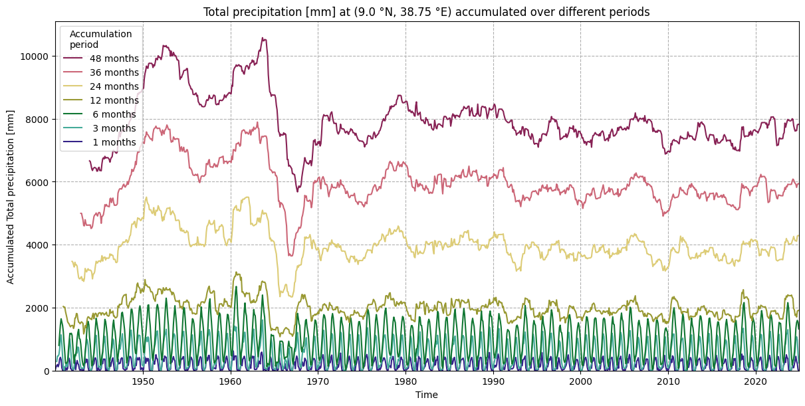
Fig. 6.1.1 Total precipitation from ERA5 accumulated over different periods, for the example site of Addis Ababa, Ethiopia.#
3.3 Fit gamma distribution by calendar month#
At the core of SPI is the assumption that (monthly) total precipitation values follow a gamma distribution. Here, this distribution is fitted to data within the reference period (1991–2020 by default, see above). A separate distribution is fitted for each calendar month, i.e. we fit one distribution for all 30 Januaries in the reference period, another for all 30 Februaries, and so on. This separation allows the resulting index to account for seasonal differences. This fitting process is then repeated for each accumulation period.
Here, we use scipy.stats.gamma to fit the gamma distribution. This returns three parameters for each calendar month and accumulation period, namely shape (α), location (μ), and scale (β).
The observed (accumulated) total precipitation values along the entire time series (1940–2024 in our example) are then compared to the fitted parameters. This is quantified in terms of where the observed values fall on the cumulative distribution function (CDF):
Where P(X ≤ x) is the probability for a randomly drawn total precipitation X to be equal to or less than the observed value x; FX is the CDF for a gamma distribution with shape α, location µ, and scale β; and the CDF is equal to the integral of the corresponding probability density function up to x.
As before, there is a distribution for each calendar month, for each accumulation period.
Note that actually evaluating the CDF – as opposed to queueing it up in dask, as done here – can be slow, especially for a large dataset like global ERA5 precipitation. As such, if you are interested in a subset of the data, such as a specific site or period in time, it may be best to subset your data before calculating the CDF rather than afterwards. An example of this is provided below in the comparison with ERA5–Drought SPI.
3.4 Adjust for months with zero precipitation#
Sometimes, zero (or near-zero) monthly precipitation is observed, particularly in dry areas like deserts. Maintaining the desired statistics, such as the mean SPI in the reference period being 0, requires adjusting the CDF to account for these zero-precipitation months.
ERA5–Drought follows the [Stagge+15] method to adjust the CDF. First, the probability of zero precipitation is calculated as follows:
where n0 is the number of months with zero precipitation in the reference period, and n is the total number of months in the reference period (here 30 for 1991–2020). While some datasets define “zero precipitation” using a slightly higher threshold (e.g. less than 0.1 mm) to account for measurement uncertainty, ERA5–Drought uses a threshold of exactly 0 mm total precipitation in the underpinning ERA5 data.
Having calculated the probability of zero precipitation, the CDF is adjusted as follows:
As before, this adjustment is carried out individually for each calendar month and accumulation period.
3.5 Compute SPI#
Finally, SPI values for each data point (latitude, longitude, time) are calculated from the adjusted CDF values F’X by transforming to a standard normal distribution. The function scipy.stats.norm.ppf is used to calculate the inverse CDF Φ-1 of the normal distribution:
<xarray.Dataset> Size: 59GB
Dimensions: (lat: 721, lon: 1440, time: 1020)
Coordinates:
number int64 8B 0
* lat (lat) float64 6kB 90.0 89.75 89.5 89.25 ... -89.5 -89.75 -90.0
* lon (lon) float64 12kB -180.0 -179.8 -179.5 ... 179.2 179.5 179.8
month (time) int64 8kB dask.array<chunksize=(1020,), meta=np.ndarray>
* time (time) datetime64[ns] 8kB 1940-01-01T06:00:00 ... 2024-12-01T06:...
Data variables:
SPI1 (lat, lon, time) float64 8GB dask.array<chunksize=(103, 360, 1020), meta=np.ndarray>
SPI3 (lat, lon, time) float64 8GB dask.array<chunksize=(103, 360, 1020), meta=np.ndarray>
SPI6 (lat, lon, time) float64 8GB dask.array<chunksize=(103, 360, 1020), meta=np.ndarray>
SPI12 (lat, lon, time) float64 8GB dask.array<chunksize=(103, 360, 1020), meta=np.ndarray>
SPI24 (lat, lon, time) float64 8GB dask.array<chunksize=(103, 360, 1020), meta=np.ndarray>
SPI36 (lat, lon, time) float64 8GB dask.array<chunksize=(103, 360, 1020), meta=np.ndarray>
SPI48 (lat, lon, time) float64 8GB dask.array<chunksize=(103, 360, 1020), meta=np.ndarray>3.6 SPI comparison: Time series in example site#
Having reproduced the SPI index from ERA5 precipitation data following the ERA5–Drought methodology, we can now compare the results to determine the reproducibility of ERA5–Drought. We first compare the datasets over time at the example site defined in 2. General setup.
The previous sections set up the SPI reproduction pipeline for the entire ERA5 precipitation dataset (global, 1940–2024).
Because actually executing said calculation takes a long time,
as noted in the CDF subsection,
here we sub-select the downloaded ERA5 precipitation data and calculate SPI for the example site only.
For convenience, the full SPI pipeline is wrapped into a single calculate_spi_from_era5 function,
as defined in 1. Code setup.
Note that while the two may seem equivalent, downloading the ERA5 precipitation data for the example site only and then running the SPI pipeline, rather than downloading the entire dataset and subselecting for the example site, produces different results. This is likely caused by the inner workings of the MARS regridding function. For consistency with ERA5–Drought, it is necessary to download the global ERA5 dataset and subselect.
Next, we download the corresponding data from ERA5–Drought. Because of size limits on the CDS, the time series must be downloaded in parts:
First, we examine the per-point difference in SPI between ERA5–Drought and the reproduction. This comparison is performed separately for each calendar month and each accumulation period to reflect the fitting process. We calculate the median difference MΔ and median absolute difference M|Δ|, as well as the percentage of match-ups where |Δ| ≥ 0.10:
| SPI-1 | SPI-3 | SPI-6 | SPI-12 | SPI-24 | SPI-36 | SPI-48 | |||||||||||||||
|---|---|---|---|---|---|---|---|---|---|---|---|---|---|---|---|---|---|---|---|---|---|
| MΔ | M|Δ| | |Δ| ≥ 0.10 | MΔ | M|Δ| | |Δ| ≥ 0.10 | MΔ | M|Δ| | |Δ| ≥ 0.10 | MΔ | M|Δ| | |Δ| ≥ 0.10 | MΔ | M|Δ| | |Δ| ≥ 0.10 | MΔ | M|Δ| | |Δ| ≥ 0.10 | MΔ | M|Δ| | |Δ| ≥ 0.10 | |
| January | 0.0000 | 0.0000 | 1.1765 | 0.0000 | 0.0000 | 0.0000 | 0.0000 | 0.0000 | 0.0000 | 0.0000 | 0.0000 | 0.0000 | 0.0000 | 0.0000 | 0.0000 | 0.0000 | 0.0000 | 1.1765 | 0.0000 | 0.0000 | 0.0000 |
| February | 0.0000 | 0.0000 | 0.0000 | 0.0000 | 0.0000 | 0.0000 | 0.0000 | 0.0000 | 0.0000 | 0.0000 | 0.0000 | 0.0000 | 0.0000 | 0.0000 | 0.0000 | 0.0000 | 0.0000 | 1.1765 | 0.0000 | 0.0000 | 0.0000 |
| March | 0.0000 | 0.0000 | 0.0000 | 0.0000 | 0.0000 | 0.0000 | 0.0000 | 0.0000 | 0.0000 | 0.0000 | 0.0000 | 0.0000 | 0.0000 | 0.0000 | 0.0000 | 0.0000 | 0.0000 | 0.0000 | 0.0000 | 0.0000 | 0.0000 |
| April | 0.0000 | 0.0000 | 0.0000 | 0.0000 | 0.0000 | 0.0000 | 0.0000 | 0.0000 | 0.0000 | 0.0000 | 0.0000 | 0.0000 | 0.0000 | 0.0000 | 1.1765 | 0.0000 | 0.0000 | 0.0000 | 0.0000 | 0.0000 | 0.0000 |
| May | 0.0000 | 0.0000 | 0.0000 | 0.0000 | 0.0000 | 0.0000 | 0.0000 | 0.0000 | 0.0000 | -0.0001 | 0.0008 | 0.0000 | 0.0000 | 0.0000 | 0.0000 | 0.0000 | 0.0000 | 1.1765 | 0.0000 | 0.0000 | 0.0000 |
| June | 0.0000 | 0.0000 | 0.0000 | 0.0000 | 0.0000 | 0.0000 | 0.0000 | 0.0000 | 0.0000 | 0.0000 | 0.0000 | 0.0000 | 0.0000 | 0.0000 | 0.0000 | 0.0000 | 0.0000 | 0.0000 | -0.0085 | 0.0085 | 0.0000 |
| July | 0.0000 | 0.0000 | 0.0000 | 0.0000 | 0.0000 | 1.1765 | 0.0000 | 0.0000 | 0.0000 | 0.0000 | 0.0000 | 0.0000 | 0.0000 | 0.0000 | 0.0000 | 0.0000 | 0.0000 | 0.0000 | 0.0000 | 0.0000 | 0.0000 |
| August | 0.0000 | 0.0000 | 0.0000 | 0.0000 | 0.0000 | 2.3529 | 0.0000 | 0.0000 | 0.0000 | 0.0000 | 0.0000 | 0.0000 | 0.0003 | 0.0004 | 0.0000 | 0.0000 | 0.0000 | 0.0000 | -0.0008 | 0.0067 | 1.1765 |
| September | 0.0000 | 0.0000 | 0.0000 | 0.0000 | 0.0000 | 0.0000 | 0.0000 | 0.0000 | 0.0000 | 0.0000 | 0.0000 | 0.0000 | 0.0000 | 0.0000 | 0.0000 | -0.0040 | 0.0041 | 1.1765 | 0.0000 | 0.0000 | 0.0000 |
| October | 0.0000 | 0.0000 | 0.0000 | 0.0012 | 0.0012 | 0.0000 | 0.0000 | 0.0000 | 0.0000 | 0.0000 | 0.0000 | 0.0000 | 0.0000 | 0.0000 | 0.0000 | 0.0000 | 0.0000 | 0.0000 | 0.0000 | 0.0000 | 0.0000 |
| November | 0.0000 | 0.0000 | 0.0000 | 0.0000 | 0.0000 | 0.0000 | 0.0000 | 0.0000 | 0.0000 | 0.0000 | 0.0000 | 1.1765 | 0.0000 | 0.0000 | 0.0000 | -0.0005 | 0.0019 | 0.0000 | 0.0000 | 0.0000 | 0.0000 |
| December | 0.0000 | 0.0000 | 0.0000 | 0.0000 | 0.0000 | 0.0000 | 0.0000 | 0.0000 | 0.0000 | 0.0000 | 0.0000 | 0.0000 | 0.0000 | 0.0000 | 0.0000 | -0.0028 | 0.0033 | 0.0000 | 0.0000 | 0.0000 | 0.0000 |
It is clear from the table above that there is good agreement between the reproduced SPI values and those retrieved from ERA5–Drought. The median difference and median absolute difference are 0 for the vast majority of month–accumulation period pairs, and always ≤ 0.004. Similarly, the number of match-ups where the absolute difference is over our threshold of 0.10 is very small (≤2.4%, corresponding to 1 or 2 match-ups for the 1940–2024 time span) or none at all. Differences between months and between accumulation periods are due to the fitting process being applied independently to each. There are no apparent patterns across the different accumulation periods, such as a particular month always being problematic, although these may be expected in other sites.
Comparing the SPI time series (Figure 6.1.2) shows that large differences occur only in isolated spikes, generally at extreme values of SPI (below –3 or above +3) where extreme deviations (e.g. from –5 to –8) are not meaningful [Keune+25]. As such, these spikes do not cause a difference in SPI classifications (Figure 6.1.3). The cause of these spikes is not clear, since the underpinning data are the same and the similarity along the rest of the time series suggests that the fitted distributions are also (near-)equal.
In some cases, such as SPI-36 and SPI-48 in Figure 6.1.2, small regular differences are observed. These tend to be periodic per year, indicating that they correspond to individual calendar months. For example, the table above shows that SPI-48 is equal between the two datasets in all months except June and August. These differences are the result of small differences in the obtained fit parameters, which are likely caused by small differences in the fitting procedure and initial conditions. Sensitivity to initial conditions and the fitting procedure is inherent to this type of regression-based indicator and does not indicate a meaningful discrepancy in the reproducibility of ERA5–Drought.
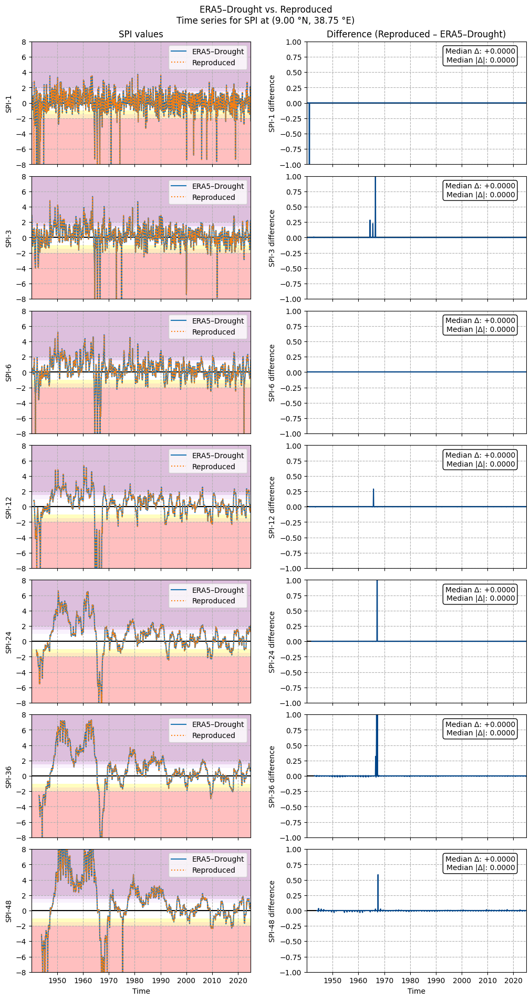
Fig. 6.1.2 SPI time series downloaded from ERA5–Drought and reproduced from ERA5 precipitation data (left) and the difference between the two (right), for the example site of Addis Ababa, Ethiopia. Colours in the left-hand column correspond to SPI categories (e.g. “extremely dry”) in [Keune+25].#
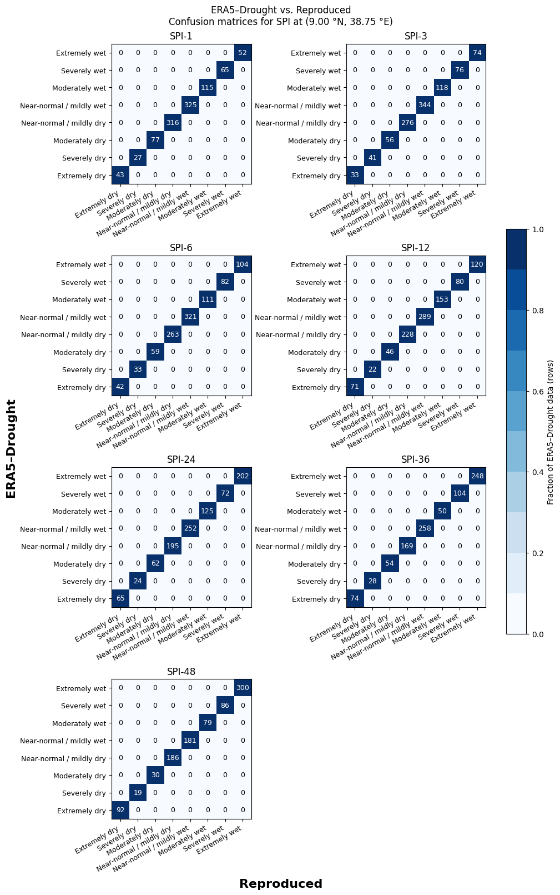
Fig. 6.1.3 Confusion matrices for SPI categories from ERA5–Drought vs. reproduced from ERA5, for the example site of Addis Ababa, Ethiopia, in 1940–2024.#
3.7 SPI comparison: Regional snapshot#
Next, we investigate spatial patterns in SPI and the difference therein across a wider region around the example site. This region is defined in 2. General setup. In this example, we look at part of the Horn of Africa using a box of 12° in all directions around Addis Ababa, Ethiopia. To reduce computing requirements, the comparison is performed for one year only, here 2024, again defined in 2. General setup.
As in the time series comparison, we subselect the desired data from ERA5 and calculate the corresponding SPI and download SPI from ERA5–Drought for the desired region and time span:
As before, we examine the per-point difference in SPI between ERA5–Drought and the reproduction for each calendar month and each accumulation period:
| SPI-1 | SPI-3 | SPI-6 | SPI-12 | SPI-24 | SPI-36 | SPI-48 | |||||||||||||||
|---|---|---|---|---|---|---|---|---|---|---|---|---|---|---|---|---|---|---|---|---|---|
| MΔ | M|Δ| | |Δ| ≥ 0.10 | MΔ | M|Δ| | |Δ| ≥ 0.10 | MΔ | M|Δ| | |Δ| ≥ 0.10 | MΔ | M|Δ| | |Δ| ≥ 0.10 | MΔ | M|Δ| | |Δ| ≥ 0.10 | MΔ | M|Δ| | |Δ| ≥ 0.10 | MΔ | M|Δ| | |Δ| ≥ 0.10 | |
| January | 0.0000 | 0.0000 | 15.5702 | 0.0000 | 0.0000 | 8.7576 | 0.0000 | 0.0000 | 6.8658 | 0.0000 | 0.0000 | 1.2754 | 0.0000 | 0.0000 | 0.0744 | 0.0000 | 0.0000 | 0.0106 | 0.0000 | 0.0000 | 0.0000 |
| February | 0.0000 | 0.0000 | 20.0128 | 0.0000 | 0.0000 | 8.5556 | 0.0000 | 0.0000 | 6.9402 | 0.0000 | 0.0000 | 1.5730 | 0.0000 | 0.0000 | 0.1275 | 0.0000 | 0.0000 | 0.0425 | 0.0000 | 0.0000 | 0.0319 |
| March | 0.0000 | 0.0000 | 18.1422 | 0.0000 | 0.0000 | 11.7653 | 0.0000 | 0.0000 | 7.3228 | 0.0000 | 0.0000 | 1.2754 | 0.0000 | 0.0000 | 0.1275 | 0.0000 | 0.0000 | 0.0213 | 0.0000 | 0.0000 | 0.0000 |
| April | 0.0000 | 0.0000 | 10.3093 | 0.0000 | 0.0000 | 11.5315 | 0.0000 | 0.0000 | 11.4146 | 0.0000 | 0.0000 | 1.4454 | 0.0000 | 0.0000 | 0.1488 | 0.0000 | 0.0000 | 0.0425 | 0.0000 | 0.0000 | 0.0000 |
| May | 0.0000 | 0.0000 | 10.8194 | 0.0000 | 0.0000 | 6.7701 | 0.0000 | 0.0000 | 5.6116 | 0.0000 | 0.0000 | 1.4135 | 0.0000 | 0.0000 | 0.0957 | 0.0000 | 0.0000 | 0.0425 | 0.0000 | 0.0000 | 0.0213 |
| June | 0.0000 | 0.0000 | 8.2155 | 0.0000 | 0.0000 | 6.3237 | 0.0000 | 0.0000 | 5.2078 | 0.0000 | 0.0000 | 1.4879 | 0.0000 | 0.0000 | 0.0850 | 0.0000 | 0.0000 | 0.0744 | 0.0000 | 0.0000 | 0.0531 |
| July | 0.0000 | 0.0000 | 12.1586 | 0.0000 | 0.0000 | 9.2571 | 0.0000 | 0.0000 | 5.6648 | 0.0000 | 0.0000 | 0.9884 | 0.0000 | 0.0000 | 0.0425 | 0.0000 | 0.0000 | 0.0531 | 0.0000 | 0.0000 | 0.0744 |
| August | 0.0000 | 0.0000 | 14.2842 | 0.0000 | 0.0000 | 8.0242 | 0.0000 | 0.0000 | 2.7527 | 0.0000 | 0.0000 | 1.3285 | 0.0000 | 0.0000 | 0.0744 | 0.0000 | 0.0000 | 0.0213 | 0.0000 | 0.0000 | 0.0744 |
| September | 0.0000 | 0.0000 | 8.7895 | 0.0000 | 0.0000 | 7.7798 | 0.0000 | 0.0000 | 3.3797 | 0.0000 | 0.0000 | 1.2329 | 0.0000 | 0.0000 | 0.0850 | 0.0000 | 0.0000 | 0.0213 | 0.0000 | 0.0000 | 0.0638 |
| October | 0.0000 | 0.0000 | 7.4397 | 0.0000 | 0.0000 | 6.7063 | 0.0000 | 0.0000 | 4.2406 | 0.0000 | 0.0000 | 1.5836 | 0.0000 | 0.0000 | 0.0531 | 0.0000 | 0.0000 | 0.0319 | 0.0000 | 0.0000 | 0.0213 |
| November | 0.0000 | 0.0000 | 8.2581 | 0.0000 | 0.0000 | 9.0764 | 0.0000 | 0.0000 | 4.5913 | 0.0000 | 0.0000 | 1.2435 | 0.0000 | 0.0000 | 0.0425 | 0.0000 | 0.0000 | 0.0425 | 0.0000 | 0.0000 | 0.0213 |
| December | 0.0000 | 0.0000 | 10.1711 | 0.0000 | 0.0000 | 7.6204 | 0.0000 | 0.0000 | 4.4851 | 0.0000 | 0.0000 | 1.3073 | 0.0000 | 0.0000 | 0.0850 | 0.0000 | 0.0000 | 0.0319 | 0.0000 | 0.0000 | 0.0425 |
As before, the differences between ERA5–Drought and reproduced SPI are small to zero in most cases. Notably, differences of more than 0.10 appear in a larger number of match-ups than before, more commonly for short accumulation periods than for long ones. This is likely because the time series for longer accumulation periods are smoother, which makes it easier for the fitting procedure to converge on the same optimal parameters. There is no clear cause for certain months showing more difference than others, such as local seasonal trends [Gebrechorkos+19], although the region may be too large and diverse to draw such correlations.
The distribution across the example region (Figure 6.1.4) shows that for SPI-3 and longer, discrepancies are concentrated in deserts (Sahara, Arabian peninsula) where zero-precipitation months are common and hence it is harder to appropriately fit SPI. In fact, many of these areas are flagged for low data quality or even not fitted at all in ERA5–Drought, as discussed in the next subsection. For SPI-1, differences between the two datasets appear more randomly spread out. Note that the grey area in the top left of the reproduced SPI-1 panel (Sudan) corresponds to NaN values, i.e. areas where the fitting procedure could not converge at all.
The generally good agreement in SPI translates into good agreement in classification (Figure 6.1.5), although some pixels do get classified differently in ERA5–Drought vs. the reproduced dataset. Mismatches occur mostly between adjacent categories (e.g. “moderately wet” and “severely wet”), although there are outliers in shorter accumulation periods; some of these likely correspond to pixels where quality flags would normally be applied [Keune+25].
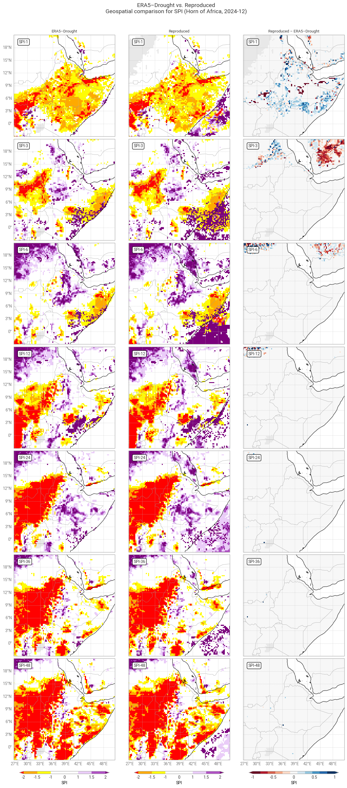
Fig. 6.1.4 SPI downloaded from ERA5–Drought (left) vs. reproduced from ERA5 precipitation data (middle) and the difference between the two (right), for the region around the example site of Addis Ababa, Ethiopia. Only one month (December 2024) is displayed. Colours correspond to SPI categories (e.g. “extremely dry”) in [Keune+25].#
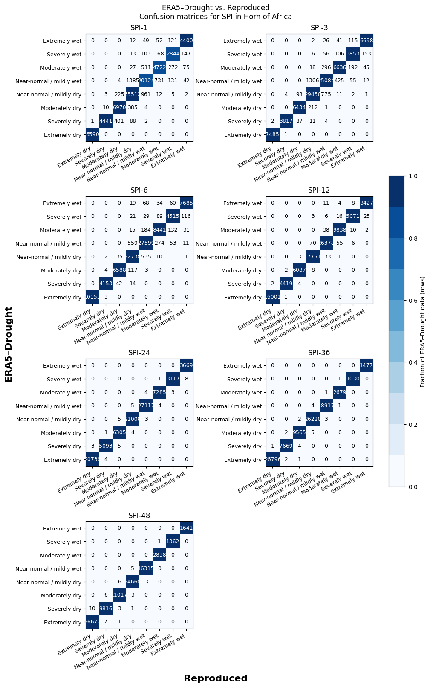
Fig. 6.1.5 Confusion matrices for SPI categories from ERA5–Drought vs. reproduced from ERA5, across the region around the example site of Addis Ababa, Ethiopia. Combines data for all months within one year (2024).#
3.8 Quality flags: Probability of zero precipitation#
One of the quality flags included in ERA5–Drought is the probability of zero precipitation p0. This represents, for each calendar month and accumulation period, the fraction of months within the reference period (1991–2020) where precipitation was zero. While the ERA5–Drought implementation of SPI accounts for months with zero precipitation by shifting the CDF, as demonstrated above, those months do skew the fitted distribution and reduce the reliability of the index. In ERA5–Drought, the gamma distribution is not even fitted if at least 10 out of 30 months in the reference window have 0 precipitation, and the authors recommend that users filter out locations with a lower threshold, such as p0 > 0.1 [Keune+25].
Unlike the zero-precipitation correction, this quality flag uses an unweighted probability, with n0 the number of months with zero precipitation and n the total number of months in the reference window (30):
In this subsection, we reproduce the p0 quality flag and its derived masks, and compare their values to those provided in ERA5–Drought.
The CDS provides ERA5–Drought’s p0 flag for each accumulation period, but does not distinguish between them in the variable name. This means that p0 must be downloaded separately for each accumulation period, renamed, and merged together, rather than downloading it for all simultaneously:
For both datasets, we create masks corresponding to the threshold for not fitting a gamma distribution (p0 > 0.33) and the recommended threshold for filtering data (p0 > 0.1):
First, we quantitatively compare how often the values of p0 and the derived masks in ERA5–Drought and the reproduction match:
| tp1 | tp3 | tp6 | tp12 | tp24 | tp36 | tp48 | |
|---|---|---|---|---|---|---|---|
| Matching p0 [%] | 99.34 | 99.86 | 99.98 | 100.00 | 100.00 | 100.00 | 100.00 |
| Matching p0 > 0.33 [%] | 99.87 | 99.98 | 100.00 | 100.00 | 100.00 | 100.00 | 100.00 |
| Matching p0 > 0.10 [%] | 99.65 | 99.95 | 99.99 | 100.00 | 100.00 | 100.00 | 100.00 |
It is immediately evident from the table above that there is excellent agreement across all accumulation periods: ≥99% in all cases and 100% in most. Since p0 is derived directly from the accumulated ERA5 total precipitation, without any intermediate fitting steps, the few discrepancies that do occur are likely caused by small differences in the data processing between ERA5–Drought and this notebook. Potential examples include the cut-off for zero precipitation (exactly 0 mm, 0.01 mm, or something else); if the cut-off is not exactly zero, whether it is applied to the total or average precipitation in the accumulation period; whether leap years are accounted for; and computational factors like floating-point accuracy. Given the level of agreement, it is safe to conclude that the p0 quality flag is reproducible.
The global distribution of p0 in the 3-month accumulation period (Figure 6.1.6) shows that differences occur in isolated pixels, e.g. in Argentina, Ukraine, and Russia, rather than clusters. Many pixels in the example region (Horn of Africa) are flagged in one or more months (Figure 6.1.7) as suggested in the SPI comparison above, although the flagged pixels do not always match one-to-one with the pixels that showed differences in SPI (compare Figure 6.1.4).
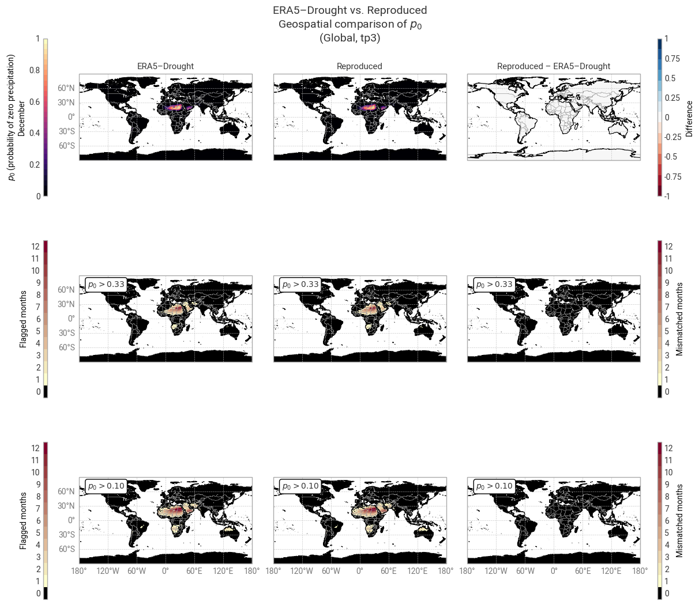
Fig. 6.1.6 Global probability of zero precipitation in the 3-month accumulation period and associated masks in ERA5–Drought (left) vs. reproduced from ERA5 precipitation data (middle) and the difference or mismatch between the two (right). Probability is displayed for one calendar month (December) across the reference window (1991–2020). Masks are displayed as the number of calendar months that get flagged and the oceans are masked, following [Keune+25] Fig. 3.#
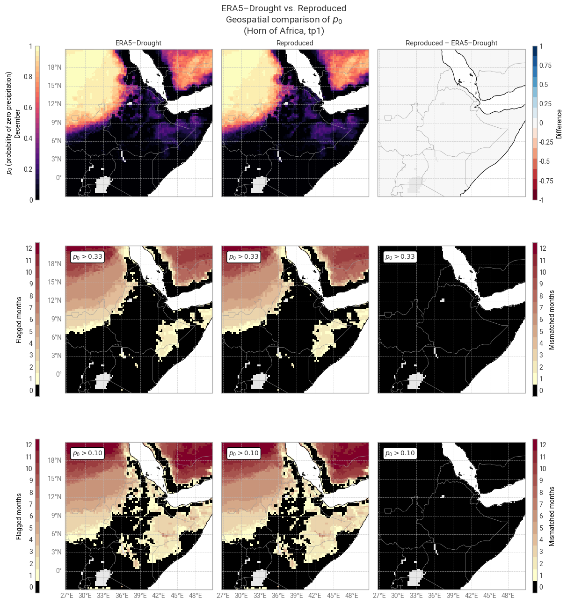
Fig. 6.1.7 Probability of zero precipitation in the 1-month accumulation period and associated masks in ERA5–Drought (left) vs. reproduced from ERA5 precipitation data (middle) and the difference or mismatch between the two (right). Probability is displayed for one calendar month (December) across the reference window (1991–2020). Masks are displayed as the number of calendar months that get flagged and the oceans are masked, following [Keune+25] Fig. 3. This figure displays only the example region (Horn of Africa), for comparison with Figure 6.1.4.#
3.9 Quality flags: Shapiro–Wilk normality test#
Another quality flag included in ERA5–Drought is the normality α, derived using the Shapiro–Wilk test [Shapiro+65]. This α quantifies how well the computed SPI or SPEI values in the reference period (1991–2020) are described by a standard normal distribution. As such, α is provided for each combination of calendar month and accumulation window, for each pixel. The mask in ERA–Drought uses a threshold of 0.05, meaning points where α < 0.05 are rejected.
In this subsection, we reproduce the α quality flag mask, and compare its values to those provided in ERA5–Drought. Because this involves computing SPI, which is computationally expensive, the evaluation is performed over the example region (Horn of Africa) rather than globally.
The CDS provides ERA5–Drought’s α flag for each accumulation period, but does not distinguish between them in the variable name. This means that α must be downloaded separately for each accumulation period, renamed, and merged together, rather than downloading it for all simultaneously. Note that unlike for p0, ERA5–Drought does not provide the value of α, only the corresponding boolean mask.
First, we quantitatively compare how often the values of the normality mask desired from α in ERA5–Drought and the reproduction match:
| SPI-1 | SPI-3 | SPI-6 | SPI-12 | SPI-24 | SPI-36 | SPI-48 | |
|---|---|---|---|---|---|---|---|
| Matching α < 0.05 [%] | 74.83 | 84.23 | 87.91 | 92.21 | 90.39 | 90.06 | 88.80 |
The table above shows good agreement, especially for longer accumulation periods. For SPI-1, a quarter of the comparisons do not match. While there are pixels across the entire region where α does not match for one or two calendar months (Figure 6.1.8), the majority of mismatches are concentrated in deserts (Sahara and Arabian peninsula), which in practice would be masked anyway for failing the p0 test (see above). This pattern is even stronger in the distribution of SPI-3 normality (Figure 6.1.9). It is more difficult to fit a gamma distribution in drier areas and drier calendar months, in which case SPI values are less trustworthy – meaning the normality flag is working as intended.
In conclusion, the differences in the normality mask (α < 0.05) seen above are likely caused by the differences in fitted distributions seen before, and thus do not affect the assessment of reproducibility. The mask provided with ERA5–Drought can be used confidently to mask corresponding SPI values.
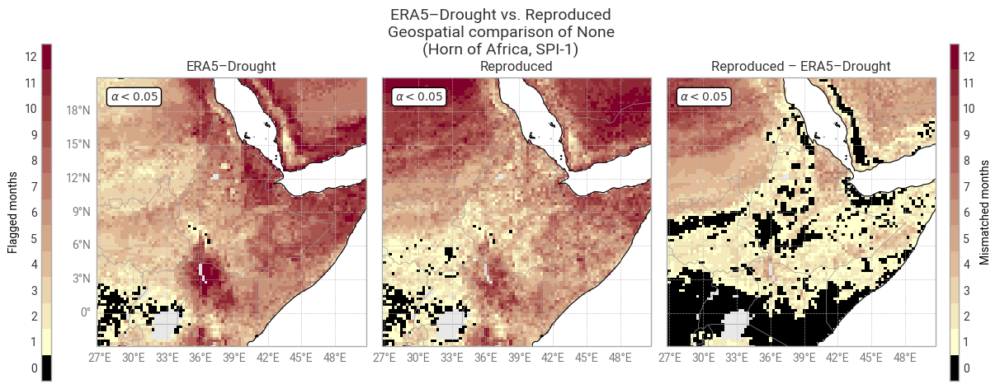
Fig. 6.1.8 Shapiro–Wilk normality α for SPI-1 and associated masks in ERA5–Drought (left) vs. reproduced from ERA5 precipitation data (middle) and the difference or mismatch between the two (right). The α < 0.05 mask is displayed as the number of calendar months that get flagged and the oceans are masked, following [Keune+25] Fig. 3. This figure displays only the example region (Horn of Africa).#
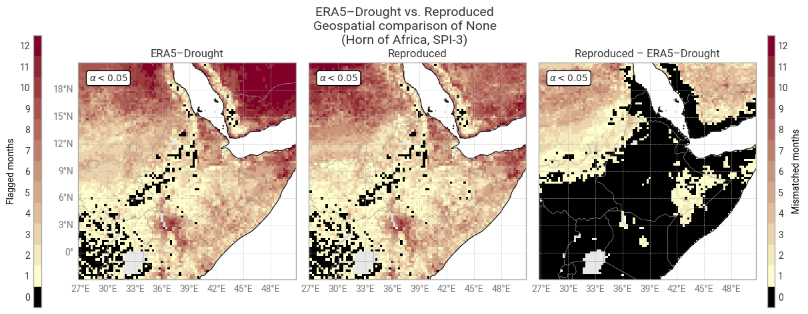
Fig. 6.1.9 Shapiro–Wilk normality α for SPI-3 and associated masks in ERA5–Drought (left) vs. reproduced from ERA5 precipitation data (middle) and the difference or mismatch between the two (right). The α < 0.05 mask is displayed as the number of calendar months that get flagged and the oceans are masked, following [Keune+25] Fig. 3. This figure displays only the example region (Horn of Africa).#
4. SPEI comparison#
The process of calculating SPEI is very similar to that for SPI, with three major differences:
SPEI is based on the water balance (precipitation and potential evaporation or evapotranspiration), rather than just precipitation.
SPEI is based on a logistic distribution, rather than a gamma distribution.
SPEI does not need to be adjusted for months with zero precipitation.
As such, this section is structured similarly to 3. SPI comparison and can be run entirely independently, but some of the more detailed explanations from said section are left out for brevity this time.
4.1 Download monthly precipitation and potential evaporation data from ERA5#
First, the monthly-mean total precipitation (variable 228.128) and evaporation (variable 251.228) are downloaded from the Complete ERA5 global atmospheric reanalysis dataset.
More information about the format for these requests is available in the MARS ERA5 catalogue.
When executing this notebook yourself, if you have previously run 3. SPI comparison and have caching enabled in earthkit-data, the downloaded precipitation data will be re-used.
<xarray.Dataset> Size: 8GB
Dimensions: (time: 1020, lat: 721, lon: 1440)
Coordinates:
number int64 8B 0
* time (time) datetime64[ns] 8kB 1940-01-01T06:00:00 ... 2024-12-01T06:...
* lat (lat) float64 6kB 90.0 89.75 89.5 89.25 ... -89.5 -89.75 -90.0
* lon (lon) float64 12kB -180.0 -179.8 -179.5 ... 179.2 179.5 179.8
Data variables:
tp (time, lat, lon) float32 4GB dask.array<chunksize=(1020, 103, 360), meta=np.ndarray>
pev (time, lat, lon) float32 4GB dask.array<chunksize=(1020, 103, 360), meta=np.ndarray>
Attributes:
GRIB_centre: ecmf
GRIB_centreDescription: European Centre for Medium-Range Weather Forecasts
GRIB_subCentre: 0
Conventions: CF-1.7
institution: European Centre for Medium-Range Weather Forecasts4.2 Calculate water balance over accumulation periods#
The water balance represents the net gain or loss of water in an area due to precipitation (gain) and evaporation (loss). ECMWF’s convention, as used in ERA5, is that downward fluxes are positive and upward fluxes are negative. This means that total precipitation is always positive (or zero), potential evaporation is always negative (or zero), and the water balance is simply the sum of the two: WB = TP + PEV.
Here, we calculate the water balance per point in the downloaded ERA5 data and accumulate it over the same periods as before (1, 3, 6, 12, 24, 36, and 48 months).
The resulting accumulated time series for the example site defined in 2. General setup, Addis Ababa in Ethiopia in our example, are displayed in Figure 6.1.10. This example clearly demonstrates how the water balance moves between positive and negative (net gain vs. net loss) and how this changes depending on the accumulation period. For example, the shortest accumulation periods (1–6 months) swing up and down seasonally, but the longer-term (e.g. 48-month) accumulated water balance tends to be positive except in specific periods (e.g. the 1960s).
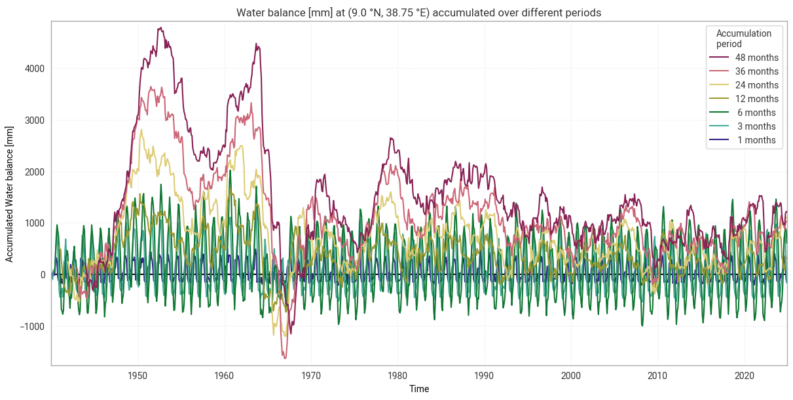
Fig. 6.1.10 Water balance from ERA5 accumulated over different accumulation periods, for the example site of Addis Ababa, Ethiopia.#
4.3 Fit logistic distribution and compute SPEI#
While SPI assumes a gamma distribution for total precipitation, this does not hold for water balance. For SPEI, various distributions are used in the literature [Stagge+15]. While [Keune+25] specifies that ERA5–Drought’s SPEI is based on the generalised log-logistic distribution, following [Vicente-Serrano+10], private communication with the authors indicates that a generalised logistic distribution is used instead.
As before, the distribution is fitted to data in the reference window (1991–2020), Here, we use scipy.stats.genlogistic to fit the generalised logistic distribution. This returns three parameters for each calendar month and accumulation period, namely shape (c), location (μ), and scale (β).
The observed (accumulated) water balance values along the entire time series are then compared to the fitted parameters in terms of where they fall on the cumulative distribution function (CDF). From these CDF values, SPEI values for each data point (latitude, longitude, time) are calculated by transforming to a standard normal distribution. The zero-precipitation correction from 3. SPI comparison is not relevant to SPEI.
Note that actually evaluating the CDF – as opposed to queueing it up in dask, as done here – can be slow, especially for a large dataset like global ERA5 precipitation and evaporation. As such, if you are interested in a subset of the data, such as a specific site or period in time, it may be best to subset your data before calculating the CDF rather than afterwards. An example of this is provided below in the comparison with ERA5–Drought SPEI.
4.4 SPEI comparison: Time series in example site#
Having reproduced SPEI from ERA5 precipitation and potential evaporation data following the ERA5–Drought methodology, we can now compare the results to assess the reproducibility of ERA5–Drought. We first compare the datasets over time at the example site defined in 2. General setup.
As before,
because the global calculation set up in the previous subsections can take a long time to execute,
here we sub-select the downloaded ERA5 data and calculate SPEI for the example site only.
For convenience, the full SPEI pipeline is wrapped into a single calculate_spei_from_era5 function,
as defined in 1. Code setup.
Next, we download the corresponding data from ERA5–Drought. Because of size limits on the CDS, the time series must be downloaded in parts:
Again, we examine the per-point difference in SPEI between ERA5–Drought and the reproduction for each calendar month and each accumulation period. We calculate the median difference MΔ and median absolute difference M|Δ|, as well as the percentage of match-ups where |Δ| ≥ 0.10:
| SPEI-1 | SPEI-3 | SPEI-6 | SPEI-12 | SPEI-24 | SPEI-36 | SPEI-48 | |||||||||||||||
|---|---|---|---|---|---|---|---|---|---|---|---|---|---|---|---|---|---|---|---|---|---|
| MΔ | M|Δ| | |Δ| ≥ 0.10 | MΔ | M|Δ| | |Δ| ≥ 0.10 | MΔ | M|Δ| | |Δ| ≥ 0.10 | MΔ | M|Δ| | |Δ| ≥ 0.10 | MΔ | M|Δ| | |Δ| ≥ 0.10 | MΔ | M|Δ| | |Δ| ≥ 0.10 | MΔ | M|Δ| | |Δ| ≥ 0.10 | |
| January | 0.0000 | 0.0000 | 0.0000 | 0.0000 | 0.0000 | 0.0000 | -0.0000 | 0.0000 | 0.0000 | -0.0000 | 0.0000 | 0.0000 | -0.0000 | 0.0000 | 0.0000 | 0.0000 | 0.0000 | 0.0000 | 0.0000 | 0.0000 | 0.0000 |
| February | 0.0135 | 0.0162 | 0.0000 | 0.0068 | 0.0106 | 0.0000 | -0.0003 | 0.0240 | 0.0000 | 0.0065 | 0.0133 | 1.1765 | -0.0429 | 0.0439 | 3.5294 | -0.0131 | 0.0315 | 0.0000 | 0.0180 | 0.0349 | 11.7647 |
| March | 0.0041 | 0.0203 | 0.0000 | 0.0223 | 0.0319 | 0.0000 | 0.0021 | 0.0175 | 0.0000 | 0.0070 | 0.0287 | 4.7059 | -0.0489 | 0.0497 | 3.5294 | -0.0083 | 0.0356 | 2.3529 | 0.0120 | 0.0334 | 3.5294 |
| April | -0.0153 | 0.0153 | 0.0000 | 0.0042 | 0.0226 | 0.0000 | -0.0026 | 0.0252 | 1.1765 | -0.0020 | 0.0276 | 3.5294 | -0.0102 | 0.0326 | 3.5294 | -0.0699 | 0.0699 | 18.8235 | 0.0248 | 0.0285 | 11.7647 |
| May | -0.0380 | 0.0380 | 0.0000 | -0.0275 | 0.0312 | 2.3529 | -0.0248 | 0.0255 | 0.0000 | -0.0367 | 0.0411 | 2.3529 | 0.0019 | 0.0326 | 5.8824 | -0.0558 | 0.0558 | 0.0000 | -0.0013 | 0.0102 | 4.7059 |
| June | -0.0249 | 0.0280 | 0.0000 | -0.0396 | 0.0396 | 0.0000 | -0.0255 | 0.0264 | 0.0000 | -0.0250 | 0.0250 | 0.0000 | 0.0137 | 0.0248 | 2.3529 | -0.1022 | 0.1022 | 49.4118 | 0.0085 | 0.0316 | 20.0000 |
| July | -0.0334 | 0.0354 | 2.3529 | -0.0472 | 0.0487 | 2.3529 | -0.0346 | 0.0355 | 0.0000 | -0.0278 | 0.0278 | 0.0000 | -0.0094 | 0.0547 | 23.5294 | -0.1233 | 0.1233 | 49.4118 | 0.0181 | 0.0462 | 23.5294 |
| August | -0.0228 | 0.0288 | 1.1765 | -0.0343 | 0.0931 | 48.2353 | -0.0384 | 0.0387 | 4.7059 | -0.0465 | 0.0466 | 1.1765 | -0.0015 | 0.0403 | 15.2941 | -0.1525 | 0.1525 | 57.6471 | 0.0065 | 0.0563 | 21.1765 |
| September | -0.0050 | 0.0238 | 0.0000 | -0.0275 | 0.0318 | 0.0000 | -0.0498 | 0.0498 | 0.0000 | -0.0347 | 0.0369 | 3.5294 | 0.0044 | 0.0358 | 16.4706 | -0.1424 | 0.1424 | 52.9412 | -0.0326 | 0.0381 | 1.1765 |
| October | 0.0112 | 0.0161 | 0.0000 | 0.0019 | 0.0426 | 1.1765 | -0.0469 | 0.0477 | 0.0000 | -0.0347 | 0.0348 | 0.0000 | -0.0006 | 0.0491 | 21.1765 | -0.1220 | 0.1220 | 50.5882 | -0.0296 | 0.0349 | 1.1765 |
| November | 0.0190 | 0.0198 | 0.0000 | 0.0080 | 0.0228 | 0.0000 | -0.0115 | 0.0460 | 4.7059 | -0.0255 | 0.0264 | 1.1765 | 0.0065 | 0.0362 | 11.7647 | -0.1140 | 0.1140 | 52.9412 | -0.0238 | 0.0396 | 2.3529 |
| December | 0.0118 | 0.0159 | 0.0000 | 0.0307 | 0.0307 | 0.0000 | -0.0107 | 0.0475 | 14.1176 | -0.0217 | 0.0236 | 4.7059 | 0.0074 | 0.0444 | 21.1765 | -0.1287 | 0.1287 | 55.2941 | -0.0314 | 0.0363 | 2.3529 |
At first glance, agreement in SPEI is considerably worse than in SPI. This shows in non-zero median and median absolute differences for most calendar month–accumulation period pairs, as well as larger percentages of match-ups that exceed the threshold of 0.10 difference. These patterns are visible in the time series comparison (Figure 6.1.11) in the form of noticeable scatter about the 0-line, in addition to a few spikes like those seen in Figure 6.1.2.
However, agreement is still good in general, and the discrepancies seen above rarely lead to differences in classification (Figure 6.1.12). This is particularly important for SPEI-36, where differences in 1950–1970 are large but do not change the resulting classification.
The most likely cause for the increased difference is the choice of statistical distribution. As noted above, it is not entirely clear which distribution underpins ERA5–Drought’s SPEI values, and the scipy.stats.genlogistic implementation used in this notebook may not be the same one. For example, Wikipedia lists four different generalised logistic distributions. If the distribution used in ERA5–Drought is not equal to, but similar to, the implementation used in this notebook, that may well result in consistent, small differences in the exact values but good agreement overall – as seen in this analysis.
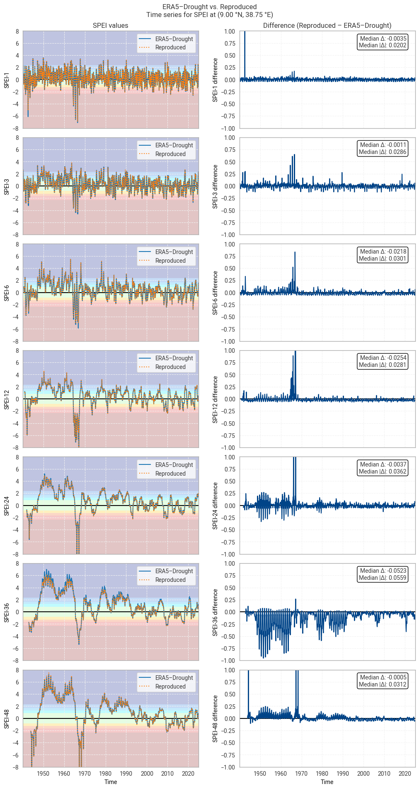
Fig. 6.1.11 SPEI time series downloaded from ERA5–Drought and reproduced from ERA5 precipitation data (left) and the difference between the two (right), for the example site of Addis Ababa, Ethiopia. Colours in the left-hand column correspond to SPEI categories (e.g. “extremely dry”) in [Keune+25].#
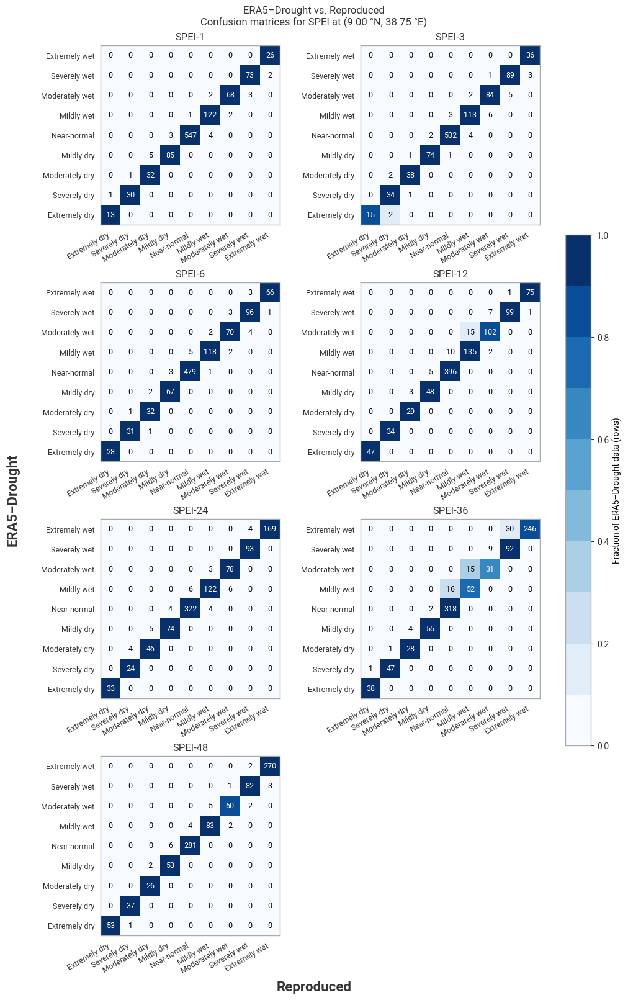
Fig. 6.1.12 Confusion matrices for SPEI categories from ERA5–Drought vs. reproduced from ERA5, for the example site of Addis Ababa, Ethiopia, in 1940–2024.#
4.5 SPEI comparison: Regional snapshot#
Next, we investigate spatial patterns in SPEI and the difference therein across a wider region around the example site. This region is defined in 2. General setup. In this example, we look at part of the Horn of Africa using a box of 12° in all directions around Addis Ababa, Ethiopia. To reduce computing requirements, the comparison is performed for one year only, here 2024, again defined in 2. General setup.
As in the time series comparison, we subselect the desired data from ERA5 and calculate the corresponding SPEI and download SPEI from ERA5–Drought for the desired region and time span:
As before, we examine the per-point difference in SPI between ERA5–Drought and the reproduction for each calendar month and each accumulation period:
| SPEI-1 | SPEI-3 | SPEI-6 | SPEI-12 | SPEI-24 | SPEI-36 | SPEI-48 | |||||||||||||||
|---|---|---|---|---|---|---|---|---|---|---|---|---|---|---|---|---|---|---|---|---|---|
| MΔ | M|Δ| | |Δ| ≥ 0.10 | MΔ | M|Δ| | |Δ| ≥ 0.10 | MΔ | M|Δ| | |Δ| ≥ 0.10 | MΔ | M|Δ| | |Δ| ≥ 0.10 | MΔ | M|Δ| | |Δ| ≥ 0.10 | MΔ | M|Δ| | |Δ| ≥ 0.10 | MΔ | M|Δ| | |Δ| ≥ 0.10 | |
| January | -0.0000 | 0.0000 | 0.7333 | 0.0000 | 0.0000 | 1.4561 | 0.0000 | 0.0000 | 0.1807 | 0.0000 | 0.0000 | 0.1594 | -0.0000 | 0.0000 | 0.2019 | -0.0000 | 0.0000 | 0.2232 | -0.0000 | 0.0000 | 0.2763 |
| February | -0.0046 | 0.0294 | 5.7817 | -0.0261 | 0.0290 | 5.7604 | -0.0358 | 0.0417 | 11.6909 | -0.0258 | 0.0358 | 9.9692 | -0.0256 | 0.0317 | 8.3006 | -0.0202 | 0.0318 | 11.1383 | -0.0105 | 0.0288 | 9.7247 |
| March | -0.0094 | 0.0283 | 4.1981 | -0.0179 | 0.0283 | 5.6223 | -0.0342 | 0.0408 | 11.2658 | -0.0303 | 0.0381 | 10.1180 | -0.0258 | 0.0321 | 7.8010 | -0.0208 | 0.0325 | 10.8194 | -0.0169 | 0.0290 | 9.4059 |
| April | -0.0078 | 0.0322 | 9.3315 | -0.0178 | 0.0393 | 14.4224 | -0.0252 | 0.0387 | 13.4871 | -0.0316 | 0.0414 | 14.7731 | -0.0250 | 0.0330 | 9.3209 | -0.0219 | 0.0318 | 10.6494 | -0.0121 | 0.0302 | 10.5112 |
| May | -0.0115 | 0.0266 | 5.8561 | -0.0213 | 0.0344 | 12.9982 | -0.0275 | 0.0348 | 15.6977 | -0.0301 | 0.0401 | 13.8591 | -0.0238 | 0.0332 | 9.1614 | -0.0218 | 0.0328 | 10.4687 | -0.0133 | 0.0317 | 12.0098 |
| June | -0.0086 | 0.0323 | 18.7374 | -0.0187 | 0.0323 | 15.9316 | -0.0228 | 0.0345 | 17.8659 | -0.0321 | 0.0432 | 16.5480 | -0.0242 | 0.0326 | 11.3402 | -0.0231 | 0.0331 | 12.6262 | -0.0155 | 0.0311 | 13.2958 |
| July | -0.0196 | 0.0296 | 9.3634 | -0.0169 | 0.0324 | 12.1692 | -0.0255 | 0.0353 | 17.2707 | -0.0378 | 0.0451 | 16.1547 | -0.0289 | 0.0349 | 11.9885 | -0.0246 | 0.0337 | 13.5402 | -0.0179 | 0.0311 | 13.6253 |
| August | -0.0169 | 0.0367 | 13.9547 | -0.0209 | 0.0330 | 9.5015 | -0.0279 | 0.0355 | 10.3305 | -0.0417 | 0.0456 | 12.8813 | -0.0327 | 0.0376 | 12.4774 | -0.0268 | 0.0334 | 12.6050 | -0.0194 | 0.0305 | 12.8281 |
| September | -0.0109 | 0.0296 | 5.5266 | -0.0224 | 0.0317 | 10.5962 | -0.0216 | 0.0311 | 8.4600 | -0.0404 | 0.0429 | 12.0310 | -0.0325 | 0.0368 | 11.8185 | -0.0264 | 0.0333 | 12.9876 | -0.0200 | 0.0304 | 12.2542 |
| October | 0.0063 | 0.0270 | 2.3807 | -0.0064 | 0.0302 | 5.5798 | -0.0133 | 0.0310 | 8.4387 | -0.0279 | 0.0372 | 9.0445 | -0.0299 | 0.0343 | 11.2552 | -0.0271 | 0.0322 | 11.3189 | -0.0236 | 0.0328 | 12.1267 |
| November | 0.0053 | 0.0260 | 4.2619 | 0.0072 | 0.0298 | 4.7295 | -0.0094 | 0.0290 | 6.4088 | -0.0238 | 0.0334 | 9.6716 | -0.0301 | 0.0344 | 10.9045 | -0.0274 | 0.0316 | 11.3827 | -0.0251 | 0.0334 | 12.3392 |
| December | 0.0105 | 0.0255 | 8.0986 | 0.0115 | 0.0253 | 4.6551 | -0.0055 | 0.0260 | 3.5392 | -0.0217 | 0.0328 | 8.8001 | -0.0294 | 0.0334 | 10.5644 | -0.0279 | 0.0317 | 11.5847 | -0.0253 | 0.0330 | 12.6475 |
The regional comparison between ERA5–Drought and reproduced SPEI largely shows the same patterns as the time series comparison. Across most calendar months and accumulation periods, the differences are bigger than for SPI, although there are exceptions like January–March in SPI/SPEI-1. This may be related to the local dry season [Gebrechorkos+19], which would affect SPI more by introducting zero- or low-precipitation months, or may be a coincidence. Overall, agreement in SPEI is good.
Differences between the two datasets tend to concentrate in the same areas across accumulation periods, particularly the Sudan–South Sudan–Ethiopia tri-country area (Figure 6.1.13). It is unclear whether this pattern is meaningful, considering the potential difference in statistical distribution between the datasets. The largest differences tend to occur in extremely wet or extremely dry conditions, and tend not to affect the resulting classification (Figure 6.1.14).
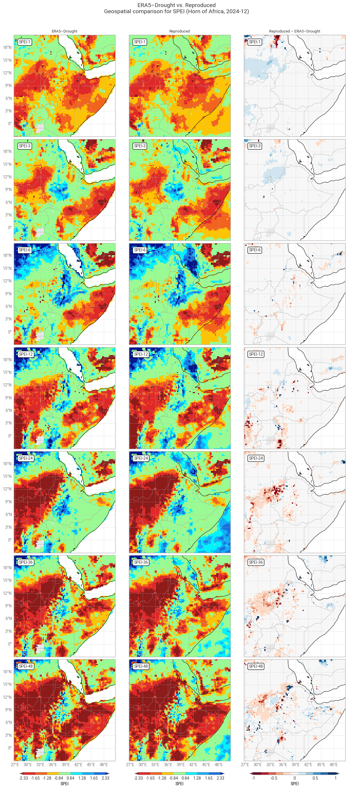
Fig. 6.1.13 SPEI downloaded from ERA5–Drought (left) vs. reproduced from ERA5 precipitation data (middle) and the difference between the two (right), for the region around the example site of Addis Ababa, Ethiopia. Only one month (December 2024) is displayed. Colours correspond to SPEI categories (e.g. “extremely dry”) in [Keune+25].#
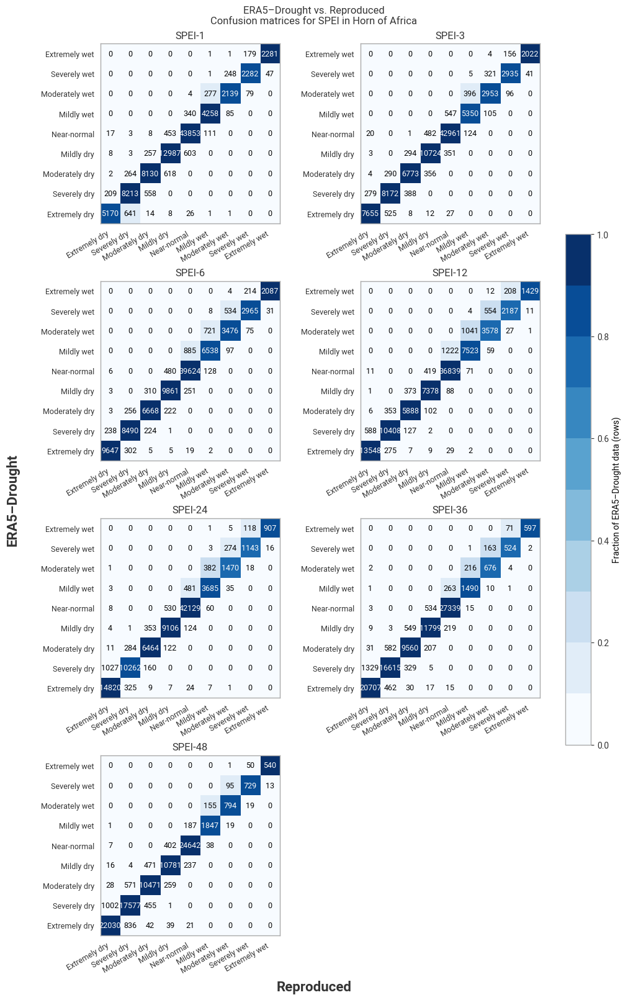
Fig. 6.1.14 Confusion matrices for SPEI categories from ERA5–Drought vs. reproduced from ERA5, across the region around the example site of Addis Ababa, Ethiopia. Combines data for all months within one year (2024).#
4.6 Quality flags: Shapiro–Wilk normality test#
ERA5–Drought includes one quality flag for SPEI, namely the normality α, derived using the Shapiro–Wilk test [Shapiro+65]. This α quantifies how well the computed SPI or SPEI values in the reference period (1991–2020) are described by a standard normal distribution. As such, α is provided for each combination of calendar month and accumulation window, for each pixel. The mask in ERA–Drought uses a threshold of 0.05, meaning points where α < 0.05 are rejected.
In this subsection, we reproduce the α quality flag mask, and compare its values to those provided in ERA5–Drought. Because this involves computing SPEI, which is computationally expensive, the evaluation is performed over the example region (Horn of Africa) rather than globally.
The CDS provides ERA5–Drought’s α flag for each accumulation period, but does not distinguish between them in the variable name. This means that α must be downloaded separately for each accumulation period, renamed, and merged together, rather than downloading it for all simultaneously. Note that unlike for p0, ERA5–Drought does not provide the value of α, only the corresponding boolean mask.
First, we quantitatively compare how often the values of the normality mask desired from α in ERA5–Drought and the reproduction match:
| SPEI-1 | SPEI-3 | SPEI-6 | SPEI-12 | SPEI-24 | SPEI-36 | SPEI-48 | |
|---|---|---|---|---|---|---|---|
| Matching α < 0.05 [%] | 92.77 | 91.43 | 90.64 | 91.13 | 88.83 | 87.77 | 87.51 |
Agreement in the SPEI normality flag is excellent (≥87%) across all accumulation periods. The normality mask is applied much more rarely for SPEI than for SPI and mismatched months appear randomly distributed across the Horn region (Figures 6.1.15 and 6.1.16). This result shows that while the fitted distributions themselves may differ between ERA5–Drought and the reproduction, they tend to either both pass or both fail the normality test.
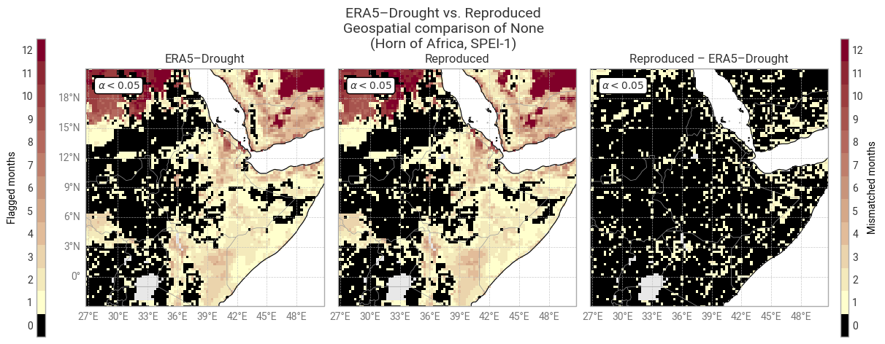
Fig. 6.1.15 Shapiro–Wilk normality α for SPEI-1 and associated masks in ERA5–Drought (left) vs. reproduced from ERA5 precipitation data (middle) and the difference or mismatch between the two (right). The α < 0.05 mask is displayed as the number of calendar months that get flagged and the oceans are masked, following [Keune+25] Fig. 3. This figure displays only the example region (Horn of Africa).#
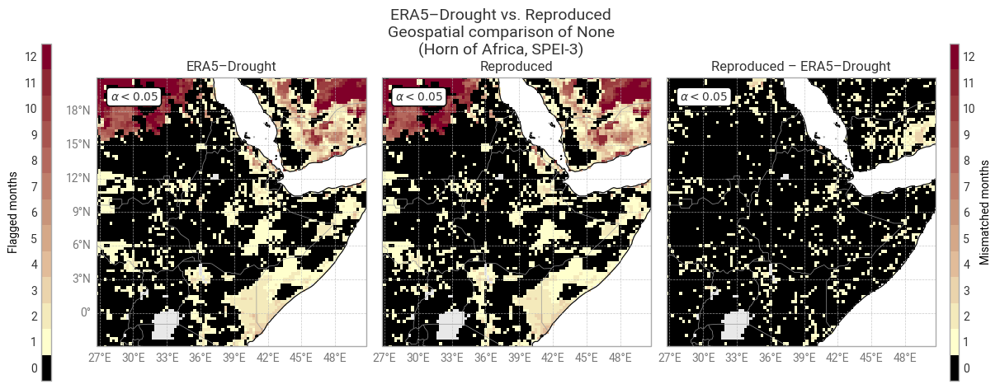
Fig. 6.1.16 Shapiro–Wilk normality α for SPEI-3 and associated masks in ERA5–Drought (left) vs. reproduced from ERA5 precipitation data (middle) and the difference or mismatch between the two (right). The α < 0.05 mask is displayed as the number of calendar months that get flagged and the oceans are masked, following [Keune+25] Fig. 3. This figure displays only the example region (Horn of Africa).#
5. Ensemble comparison#
One of the key strengths of ERA5–Drought is its inclusion of 10 ensemble members, propagated from ERA5, which can be used to probe (part of) the uncertainty in SPI and SPEI values [Keune+25].
Here, we briefly demonstrate the reproducibility of the ERA5–Drought ensemble from the corresponding ERA5 ensemble members. To avoid repetition and reduce computational cost – since the ensemble dataset is 10× the size of the reanalysis – this section focuses on the case study of SPI and SPEI in one site. If you are keen to investigate the reproducibility of the ERA5–Drought ensemble more, the code provided in this notebook can easily be re-used to do so.
5.1 Compute SPI and SPEI from ERA5 ensemble#
As before,
precipitation and potential evaporation are downloaded from
the Complete ERA5 global atmospheric reanalysis dataset,
but this time using the edmo (monthly ensemble) stream.
The ERA5 ensemble is provided at a coarser resolution than the main reanalysis;
ERA5–Drought regrids both to the same 0.25° by 0.25° grid,
which we do here using MARS’s internal functionalities.
In code, this is implemented through the line
"grid": "0.25/0.25",
in the ERA5 request (request_era5_template).
SPI and SPEI are calculated using the
calculate_spi_from_era5 and calculate_spei_from_era5
functions defined in 1. Code setup.
These functions handle the ensemble members,
which are stored along a separate dimension,
by applying the full SPI / SPEI pipeline to each member independently,
just like in ERA5–Drought.
<xarray.Dataset> Size: 588kB
Dimensions: (number: 10, time: 1020)
Coordinates:
* number (number) int64 80B 0 1 2 3 4 5 6 7 8 9
* time (time) datetime64[ns] 8kB 1940-01-01T06:00:00 ... 2024-12-01T06:...
lat float64 8B 9.0
lon float64 8B 38.75
month (time) int64 8kB 1 2 3 4 5 6 7 8 9 10 11 ... 3 4 5 6 7 8 9 10 11 12
Data variables:
SPEI1 (number, time) float64 82kB 0.3927 1.716 2.345 ... 0.8785 -1.587
SPEI3 (number, time) float64 82kB nan nan 2.478 ... 1.741 1.916 1.579
SPEI6 (number, time) float64 82kB nan nan nan nan ... 1.107 1.824 1.655
SPEI12 (number, time) float64 82kB nan nan nan ... 0.8807 0.8563 0.8725
SPEI24 (number, time) float64 82kB nan nan nan nan ... 2.572 2.675 2.517
SPEI36 (number, time) float64 82kB nan nan nan nan ... 1.187 1.284 1.349
SPEI48 (number, time) float64 82kB nan nan nan ... 0.9139 0.9423 0.9647There is a slight difference between ERA5 and ERA5–Drought in terms of the format of the ensemble.
For ERA5, the ensemble members are arranged along the number direction, going from 0 to 9.
For ERA5–Drought, it is the realization dimension, from 1 to 10.
To be able to compare the two datasets,
we add a matching realization dimension to the SPI / SPEI values derived from ERA5 above:
5.2 Download SPI and SPEI ensembles from ERA5–Drought#
Next, we download the SPI and SPEI ensemble data from ERA5–Drought.
5.3 Ensemble comparison: Time series in example site#
As before, we examine the per-point difference in SPI and SPEI between ERA5–Drought and the reproduction for each calendar month and each accumulation period.
Control member#
First, we compare ERA5–Drought and the reproduction for the first ensemble member only. This member is the control, initialised with the same conditions as the main reanalysis (which was analysed in the previous sections) but run at the reduced resolution of the ERA5-EDA ensemble [Hersbach+20] and then regridded to 0.25° by 0.25° in ERA5–Drought [Keune+25].
| SPI-1 | SPI-3 | SPI-6 | SPI-12 | SPI-24 | SPI-36 | SPI-48 | |||||||||||||||
|---|---|---|---|---|---|---|---|---|---|---|---|---|---|---|---|---|---|---|---|---|---|
| MΔ | M|Δ| | |Δ| ≥ 0.10 | MΔ | M|Δ| | |Δ| ≥ 0.10 | MΔ | M|Δ| | |Δ| ≥ 0.10 | MΔ | M|Δ| | |Δ| ≥ 0.10 | MΔ | M|Δ| | |Δ| ≥ 0.10 | MΔ | M|Δ| | |Δ| ≥ 0.10 | MΔ | M|Δ| | |Δ| ≥ 0.10 | |
| January | 0.0000 | 0.0000 | 0.0000 | 0.0000 | 0.0000 | 0.0000 | 0.0001 | 0.0001 | 0.0000 | 0.0000 | 0.0000 | 0.0000 | -0.0040 | 0.0040 | 0.0000 | -0.0002 | 0.0002 | 1.1765 | 0.0000 | 0.0000 | 0.0000 |
| February | 0.0000 | 0.0000 | 0.0000 | 0.0000 | 0.0000 | 0.0000 | 0.0000 | 0.0000 | 0.0000 | 0.0000 | 0.0000 | 0.0000 | 0.0001 | 0.0001 | 1.1765 | 0.0000 | 0.0000 | 0.0000 | 0.0000 | 0.0000 | 0.0000 |
| March | 0.0000 | 0.0000 | 0.0000 | 0.0000 | 0.0000 | 0.0000 | -0.0000 | 0.0000 | 0.0000 | 0.0010 | 0.0021 | 0.0000 | 0.0000 | 0.0000 | 0.0000 | 0.0000 | 0.0000 | 0.0000 | 0.0000 | 0.0000 | 0.0000 |
| April | 0.0000 | 0.0000 | 0.0000 | 0.0000 | 0.0000 | 0.0000 | 0.0048 | 0.0048 | 0.0000 | 0.0000 | 0.0000 | 0.0000 | 0.0000 | 0.0000 | 0.0000 | 0.0000 | 0.0000 | 1.1765 | 0.0000 | 0.0000 | 0.0000 |
| May | -0.0008 | 0.0027 | 0.0000 | 0.0000 | 0.0000 | 0.0000 | 0.0000 | 0.0000 | 0.0000 | 0.0000 | 0.0000 | 0.0000 | 0.0000 | 0.0000 | 0.0000 | 0.0000 | 0.0000 | 0.0000 | 0.0000 | 0.0000 | 0.0000 |
| June | 0.0000 | 0.0000 | 0.0000 | -0.0018 | 0.0020 | 0.0000 | 0.0000 | 0.0000 | 0.0000 | 0.0000 | 0.0000 | 0.0000 | 0.0000 | 0.0000 | 0.0000 | 0.0000 | 0.0000 | 0.0000 | 0.0000 | 0.0000 | 0.0000 |
| July | 0.0000 | 0.0000 | 1.1765 | 0.0089 | 0.0089 | 0.0000 | 0.0000 | 0.0000 | 0.0000 | 0.0000 | 0.0000 | 0.0000 | 0.0000 | 0.0000 | 0.0000 | 0.0000 | 0.0000 | 1.1765 | 0.0000 | 0.0000 | 0.0000 |
| August | 0.0000 | 0.0000 | 0.0000 | 0.0000 | 0.0000 | 0.0000 | 0.0000 | 0.0000 | 0.0000 | 0.0000 | 0.0000 | 0.0000 | 0.0000 | 0.0000 | 0.0000 | 0.0000 | 0.0000 | 0.0000 | 0.0000 | 0.0000 | 0.0000 |
| September | 0.0001 | 0.0001 | 0.0000 | 0.0000 | 0.0000 | 0.0000 | 0.0000 | 0.0000 | 0.0000 | -0.0004 | 0.0010 | 0.0000 | 0.0000 | 0.0000 | 0.0000 | 0.0000 | 0.0000 | 0.0000 | 0.0000 | 0.0000 | 0.0000 |
| October | 0.0000 | 0.0000 | 0.0000 | 0.0000 | 0.0000 | 0.0000 | 0.0000 | 0.0000 | 0.0000 | 0.0000 | 0.0000 | 0.0000 | 0.0000 | 0.0000 | 0.0000 | 0.0000 | 0.0000 | 1.1765 | 0.0000 | 0.0000 | 0.0000 |
| November | 0.0000 | 0.0000 | 0.0000 | 0.0000 | 0.0000 | 0.0000 | 0.0000 | 0.0000 | 0.0000 | 0.0029 | 0.0045 | 0.0000 | 0.0000 | 0.0000 | 0.0000 | 0.0000 | 0.0000 | 0.0000 | 0.0000 | 0.0000 | 0.0000 |
| December | 0.0000 | 0.0000 | 0.0000 | 0.0000 | 0.0000 | 0.0000 | 0.0000 | 0.0000 | 0.0000 | 0.0000 | 0.0000 | 0.0000 | 0.0000 | 0.0000 | 0.0000 | 0.0000 | 0.0000 | 0.0000 | 0.0000 | 0.0000 | 0.0000 |
| SPEI-1 | SPEI-3 | SPEI-6 | SPEI-12 | SPEI-24 | SPEI-36 | SPEI-48 | |||||||||||||||
|---|---|---|---|---|---|---|---|---|---|---|---|---|---|---|---|---|---|---|---|---|---|
| MΔ | M|Δ| | |Δ| ≥ 0.10 | MΔ | M|Δ| | |Δ| ≥ 0.10 | MΔ | M|Δ| | |Δ| ≥ 0.10 | MΔ | M|Δ| | |Δ| ≥ 0.10 | MΔ | M|Δ| | |Δ| ≥ 0.10 | MΔ | M|Δ| | |Δ| ≥ 0.10 | MΔ | M|Δ| | |Δ| ≥ 0.10 | |
| January | 0.0000 | 0.0000 | 0.0000 | 0.0021 | 0.0021 | 0.0000 | -0.0000 | 0.0000 | 0.0000 | -0.0000 | 0.0000 | 0.0000 | -0.0000 | 0.0000 | 0.0000 | -0.0000 | 0.0000 | 0.0000 | -0.0000 | 0.0000 | 0.0000 |
| February | 0.0082 | 0.0149 | 0.0000 | 0.0049 | 0.0116 | 0.0000 | -0.0544 | 0.0544 | 0.0000 | -0.0558 | 0.0565 | 1.1765 | -0.0282 | 0.0422 | 0.0000 | -0.0281 | 0.0314 | 1.1765 | -0.1017 | 0.1017 | 48.2353 |
| March | -0.0066 | 0.0208 | 0.0000 | 0.0181 | 0.0214 | 0.0000 | -0.0111 | 0.0236 | 0.0000 | -0.0719 | 0.0719 | 32.9412 | -0.0365 | 0.0370 | 2.3529 | -0.0191 | 0.0407 | 1.1765 | -0.0836 | 0.0879 | 34.1176 |
| April | -0.0081 | 0.0228 | 0.0000 | 0.0172 | 0.0201 | 0.0000 | 0.0023 | 0.0219 | 0.0000 | -0.0539 | 0.0539 | 0.0000 | -0.0165 | 0.0540 | 15.2941 | -0.0860 | 0.0860 | 37.6471 | -0.1625 | 0.1625 | 52.9412 |
| May | -0.0219 | 0.0344 | 5.8824 | -0.0135 | 0.0254 | 0.0000 | -0.0068 | 0.0381 | 2.3529 | -0.0467 | 0.0467 | 0.0000 | -0.0161 | 0.0475 | 14.1176 | -0.0609 | 0.0609 | 0.0000 | 0.0693 | 0.1130 | 56.4706 |
| June | -0.0414 | 0.0423 | 0.0000 | -0.0279 | 0.0287 | 0.0000 | -0.0083 | 0.0259 | 2.3529 | -0.0455 | 0.0455 | 0.0000 | -0.0183 | 0.0381 | 12.9412 | -0.0984 | 0.0984 | 48.2353 | 0.0131 | 0.0787 | 30.5882 |
| July | -0.0806 | 0.0810 | 23.5294 | -0.0398 | 0.0558 | 4.7059 | -0.0207 | 0.0244 | 3.5294 | -0.0565 | 0.0565 | 0.0000 | -0.0228 | 0.0447 | 11.7647 | -0.1005 | 0.1005 | 48.2353 | 0.0240 | 0.0939 | 44.7059 |
| August | -0.1862 | 0.1862 | 57.6471 | -0.1697 | 0.1697 | 68.2353 | -0.0565 | 0.0565 | 0.0000 | -0.0736 | 0.0736 | 18.8235 | -0.1048 | 0.1048 | 49.4118 | -0.1527 | 0.1527 | 62.3529 | -0.0889 | 0.0889 | 43.5294 |
| September | -0.0282 | 0.0329 | 0.0000 | -0.1285 | 0.1285 | 51.7647 | -0.0617 | 0.0617 | 29.4118 | -0.0473 | 0.0475 | 1.1765 | -0.0800 | 0.0800 | 43.5294 | -0.1581 | 0.1581 | 56.4706 | -0.0722 | 0.0722 | 14.1176 |
| October | 0.0004 | 0.0098 | 0.0000 | -0.0751 | 0.0751 | 37.6471 | -0.0524 | 0.0524 | 35.2941 | -0.0487 | 0.0487 | 0.0000 | -0.0766 | 0.0766 | 43.5294 | -0.1255 | 0.1255 | 52.9412 | -0.0598 | 0.0600 | 1.1765 |
| November | 0.0058 | 0.0175 | 0.0000 | -0.0008 | 0.0257 | 0.0000 | -0.0740 | 0.0740 | 42.3529 | -0.0411 | 0.0411 | 0.0000 | -0.0873 | 0.0873 | 41.1765 | -0.1188 | 0.1188 | 54.1176 | -0.0533 | 0.0536 | 2.3529 |
| December | 0.0251 | 0.0251 | 0.0000 | 0.0160 | 0.0197 | 0.0000 | -0.0723 | 0.0754 | 9.4118 | -0.0424 | 0.0426 | 0.0000 | -0.0831 | 0.0831 | 43.5294 | -0.1299 | 0.1299 | 58.8235 | -0.0646 | 0.0650 | 7.0588 |
The control-member comparisons for SPI and SPEI look very similar to the reanalysis comparisons from previous sections. Given these similarities, it is therefore fair to conclude that the ensemble and reanalysis components of ERA5–Drought are equally reproducible from ERA5.
Full ensemble#
Next, we compare the full ensemble, including the control and the 9 perturbed members:
| SPI-1 | SPI-3 | SPI-6 | SPI-12 | SPI-24 | SPI-36 | SPI-48 | |||||||||||||||
|---|---|---|---|---|---|---|---|---|---|---|---|---|---|---|---|---|---|---|---|---|---|
| MΔ | M|Δ| | |Δ| ≥ 0.10 | MΔ | M|Δ| | |Δ| ≥ 0.10 | MΔ | M|Δ| | |Δ| ≥ 0.10 | MΔ | M|Δ| | |Δ| ≥ 0.10 | MΔ | M|Δ| | |Δ| ≥ 0.10 | MΔ | M|Δ| | |Δ| ≥ 0.10 | MΔ | M|Δ| | |Δ| ≥ 0.10 | |
| January | 0.0000 | 0.0000 | 0.4706 | 0.0000 | 0.0000 | 0.0000 | 0.0000 | 0.0000 | 0.0000 | 0.0000 | 0.0000 | 0.0000 | 0.0000 | 0.0000 | 0.0000 | 0.0000 | 0.0000 | 0.5882 | 0.0000 | 0.0000 | 0.0000 |
| February | 0.0000 | 0.0000 | 0.0000 | 0.0000 | 0.0000 | 0.0000 | 0.0000 | 0.0000 | 0.0000 | 0.0000 | 0.0000 | 0.0000 | 0.0000 | 0.0000 | 0.2353 | 0.0000 | 0.0000 | 0.1176 | 0.0000 | 0.0000 | 0.3529 |
| March | 0.0000 | 0.0000 | 0.0000 | 0.0000 | 0.0000 | 0.0000 | 0.0000 | 0.0000 | 0.0000 | 0.0000 | 0.0000 | 0.0000 | 0.0000 | 0.0000 | 0.2353 | 0.0000 | 0.0000 | 0.2353 | 0.0000 | 0.0000 | 0.0000 |
| April | 0.0000 | 0.0000 | 0.0000 | 0.0000 | 0.0000 | 0.0000 | 0.0000 | 0.0000 | 0.0000 | 0.0000 | 0.0000 | 0.0000 | 0.0000 | 0.0000 | 0.0000 | 0.0000 | 0.0000 | 0.2353 | 0.0000 | 0.0000 | 0.2353 |
| May | 0.0000 | 0.0000 | 0.0000 | 0.0000 | 0.0000 | 0.0000 | 0.0000 | 0.0000 | 0.0000 | 0.0000 | 0.0000 | 0.0000 | 0.0000 | 0.0000 | 0.0000 | 0.0000 | 0.0000 | 0.1176 | 0.0000 | 0.0000 | 0.2353 |
| June | 0.0000 | 0.0000 | 0.2353 | 0.0000 | 0.0000 | 0.0000 | 0.0000 | 0.0000 | 0.0000 | 0.0000 | 0.0000 | 0.0000 | 0.0000 | 0.0000 | 0.0000 | 0.0000 | 0.0000 | 0.1176 | 0.0000 | 0.0000 | 0.0000 |
| July | 0.0000 | 0.0000 | 1.6471 | 0.0000 | 0.0007 | 0.0000 | 0.0000 | 0.0000 | 0.2353 | 0.0000 | 0.0000 | 0.0000 | 0.0000 | 0.0000 | 0.0000 | 0.0000 | 0.0000 | 0.5882 | 0.0000 | 0.0000 | 0.1176 |
| August | 0.0000 | 0.0000 | 0.0000 | 0.0000 | 0.0000 | 1.2941 | 0.0000 | 0.0000 | 0.1176 | 0.0000 | 0.0000 | 0.0000 | 0.0000 | 0.0000 | 0.0000 | 0.0000 | 0.0000 | 0.4706 | 0.0000 | 0.0000 | 0.1176 |
| September | 0.0000 | 0.0000 | 0.0000 | 0.0000 | 0.0000 | 0.2353 | 0.0000 | 0.0000 | 0.0000 | 0.0000 | 0.0000 | 0.0000 | 0.0000 | 0.0000 | 0.0000 | 0.0000 | 0.0000 | 0.1176 | 0.0000 | 0.0000 | 0.0000 |
| October | 0.0000 | 0.0000 | 0.0000 | 0.0000 | 0.0000 | 0.0000 | 0.0000 | 0.0000 | 0.0000 | 0.0000 | 0.0000 | 0.0000 | 0.0000 | 0.0000 | 0.0000 | 0.0000 | 0.0000 | 0.3529 | 0.0000 | 0.0000 | 0.0000 |
| November | 0.0000 | 0.0000 | 0.0000 | 0.0000 | 0.0000 | 0.0000 | 0.0000 | 0.0000 | 0.1176 | 0.0000 | 0.0000 | 0.0000 | 0.0000 | 0.0000 | 0.0000 | 0.0000 | 0.0000 | 0.3529 | 0.0000 | 0.0000 | 0.0000 |
| December | 0.0000 | 0.0000 | 6.0000 | 0.0000 | 0.0000 | 0.0000 | 0.0000 | 0.0000 | 0.1176 | 0.0000 | 0.0000 | 0.0000 | 0.0000 | 0.0000 | 0.0000 | 0.0000 | 0.0000 | 0.3529 | 0.0000 | 0.0000 | 0.1176 |
| SPEI-1 | SPEI-3 | SPEI-6 | SPEI-12 | SPEI-24 | SPEI-36 | SPEI-48 | |||||||||||||||
|---|---|---|---|---|---|---|---|---|---|---|---|---|---|---|---|---|---|---|---|---|---|
| MΔ | M|Δ| | |Δ| ≥ 0.10 | MΔ | M|Δ| | |Δ| ≥ 0.10 | MΔ | M|Δ| | |Δ| ≥ 0.10 | MΔ | M|Δ| | |Δ| ≥ 0.10 | MΔ | M|Δ| | |Δ| ≥ 0.10 | MΔ | M|Δ| | |Δ| ≥ 0.10 | MΔ | M|Δ| | |Δ| ≥ 0.10 | |
| January | 0.0000 | 0.0000 | 0.0000 | 0.0000 | 0.0004 | 0.0000 | -0.0000 | 0.0000 | 0.0000 | -0.0000 | 0.0000 | 0.0000 | -0.0000 | 0.0000 | 0.0000 | 0.0000 | 0.0000 | 0.0000 | 0.0000 | 0.0000 | 0.0000 |
| February | 0.0120 | 0.0160 | 0.0000 | 0.0051 | 0.0116 | 0.0000 | -0.0447 | 0.0449 | 0.2353 | -0.0353 | 0.0368 | 6.8235 | -0.0371 | 0.0490 | 17.8824 | -0.0444 | 0.0450 | 6.5882 | -0.0704 | 0.0812 | 41.0588 |
| March | 0.0006 | 0.0192 | 0.0000 | 0.0224 | 0.0245 | 0.0000 | -0.0028 | 0.0220 | 0.0000 | -0.0435 | 0.0574 | 28.4706 | -0.0405 | 0.0486 | 8.9412 | -0.0428 | 0.0464 | 2.5882 | -0.0859 | 0.0920 | 44.8235 |
| April | -0.0100 | 0.0142 | 0.0000 | 0.0133 | 0.0221 | 0.0000 | 0.0005 | 0.0236 | 0.0000 | -0.0355 | 0.0420 | 11.1765 | -0.0186 | 0.0379 | 5.1765 | -0.0743 | 0.0754 | 34.7059 | -0.0664 | 0.0700 | 38.5882 |
| May | -0.0140 | 0.0273 | 1.4118 | -0.0124 | 0.0233 | 0.1176 | -0.0072 | 0.0177 | 0.3529 | -0.0410 | 0.0421 | 2.4706 | -0.0034 | 0.0274 | 13.1765 | -0.0484 | 0.0497 | 11.5294 | -0.0186 | 0.0405 | 15.2941 |
| June | -0.0245 | 0.0271 | 3.7647 | -0.0232 | 0.0256 | 0.0000 | -0.0092 | 0.0207 | 1.0588 | -0.0366 | 0.0367 | 0.1176 | -0.0005 | 0.0255 | 5.6471 | -0.0661 | 0.0684 | 30.7059 | -0.0168 | 0.0476 | 17.8824 |
| July | -0.0667 | 0.0781 | 36.5882 | -0.0283 | 0.0322 | 6.1176 | -0.0221 | 0.0265 | 1.8824 | -0.0379 | 0.0383 | 0.2353 | -0.0119 | 0.0294 | 10.9412 | -0.0760 | 0.0760 | 36.7059 | -0.0255 | 0.0488 | 21.2941 |
| August | -0.1216 | 0.1376 | 59.2941 | -0.0707 | 0.0815 | 45.8824 | -0.0411 | 0.0417 | 4.1176 | -0.0474 | 0.0479 | 2.7059 | -0.0270 | 0.0408 | 13.6471 | -0.1055 | 0.1055 | 49.7647 | -0.0506 | 0.0564 | 25.8824 |
| September | -0.0247 | 0.0316 | 4.1176 | -0.0907 | 0.1038 | 50.7059 | -0.0513 | 0.0519 | 10.9412 | -0.0407 | 0.0417 | 0.3529 | -0.0523 | 0.0538 | 14.9412 | -0.0835 | 0.0835 | 42.8235 | -0.0490 | 0.0502 | 18.9412 |
| October | 0.0071 | 0.0136 | 0.0000 | -0.0487 | 0.0493 | 6.7059 | -0.0464 | 0.0502 | 14.5882 | -0.0313 | 0.0319 | 0.1176 | -0.0486 | 0.0604 | 26.0000 | -0.0842 | 0.0842 | 41.4118 | -0.0433 | 0.0445 | 9.6471 |
| November | 0.0027 | 0.0139 | 0.0000 | -0.0011 | 0.0202 | 0.9412 | -0.0515 | 0.0516 | 16.5882 | -0.0367 | 0.0409 | 0.9412 | -0.0459 | 0.0576 | 19.5294 | -0.0809 | 0.0809 | 39.8824 | -0.0451 | 0.0465 | 10.7059 |
| December | 0.0256 | 0.0256 | 0.0000 | 0.0211 | 0.0225 | 0.0000 | -0.0514 | 0.0543 | 14.2353 | -0.0313 | 0.0372 | 2.3529 | -0.0490 | 0.0616 | 28.4706 | -0.0919 | 0.0919 | 45.1765 | -0.0488 | 0.0505 | 18.2353 |
These statistics are similar to those seen in the control member comparison as well as the reanalysis comparison, as are the time series comparisons for SPI (Figures 6.1.17–6.1.26; compare Figure 6.1.2) and SPEI (Figures 6.1.27–6.1.36; compare Figure 6.1.11). As such, we can extend our conclusions on the reproducibility of ERA5–Drought from ERA5 to the entire ensemble dataset.
Notably, some of the perturbed members are much spikier than the reanalysis (e.g. SPI-1 for member 8; Figure 6.1.24) with extreme values of and changes in SPI / SPEI for short accumulation periods. These spikes are generally well-reproduced. For further analysis of the behaviour of the ERA5–Drought ensemble, including the associated quality flags, we refer the reader to a forthcoming assessment on the uncertainty in ERA5–Drought.
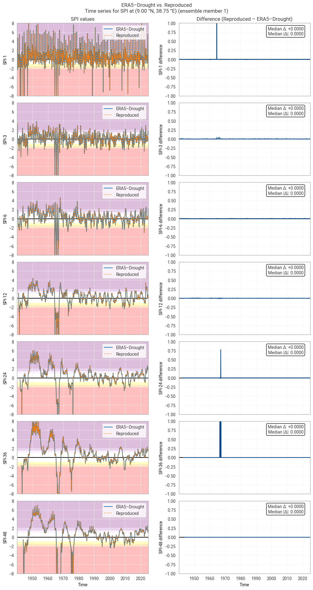
Fig. 6.1.17 SPI time series downloaded from ERA5–Drought and reproduced from ERA5 precipitation data (left) and the difference between the two (right), for the example site of Addis Ababa, Ethiopia. Colours in the left-hand column correspond to SPI categories (e.g. “extremely dry”) in [Keune+25]. This panel shows one member of the ensemble in either dataset.#
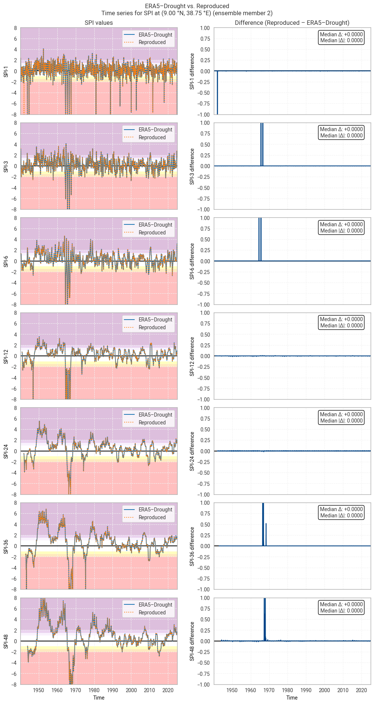
Fig. 6.1.18 SPI time series downloaded from ERA5–Drought and reproduced from ERA5 precipitation data (left) and the difference between the two (right), for the example site of Addis Ababa, Ethiopia. Colours in the left-hand column correspond to SPI categories (e.g. “extremely dry”) in [Keune+25]. This panel shows one member of the ensemble in either dataset.#
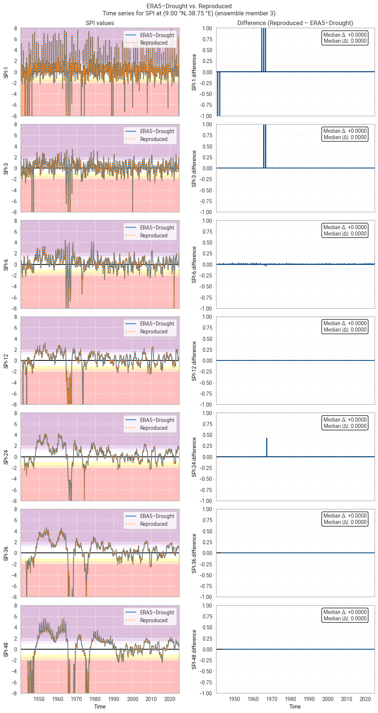
Fig. 6.1.19 SPI time series downloaded from ERA5–Drought and reproduced from ERA5 precipitation data (left) and the difference between the two (right), for the example site of Addis Ababa, Ethiopia. Colours in the left-hand column correspond to SPI categories (e.g. “extremely dry”) in [Keune+25]. This panel shows one member of the ensemble in either dataset.#
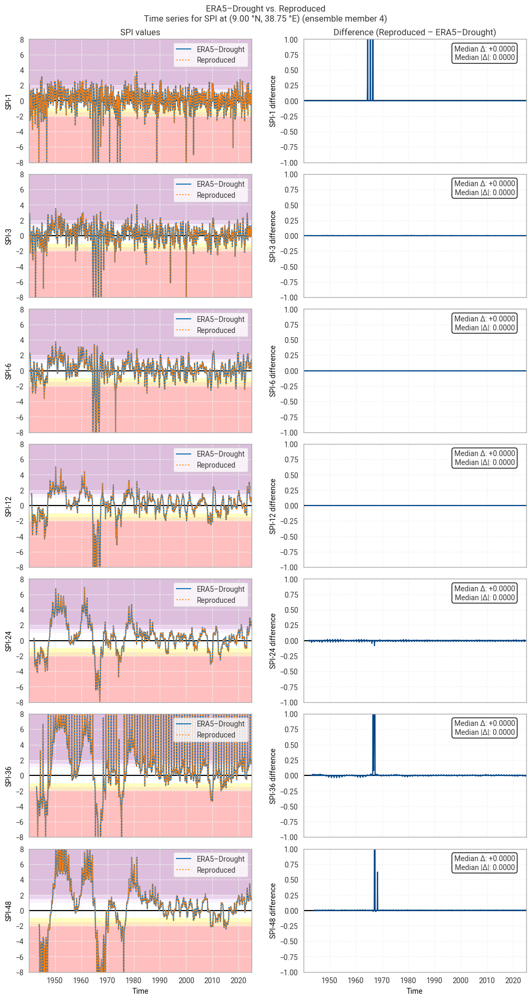
Fig. 6.1.20 SPI time series downloaded from ERA5–Drought and reproduced from ERA5 precipitation data (left) and the difference between the two (right), for the example site of Addis Ababa, Ethiopia. Colours in the left-hand column correspond to SPI categories (e.g. “extremely dry”) in [Keune+25]. This panel shows one member of the ensemble in either dataset.#
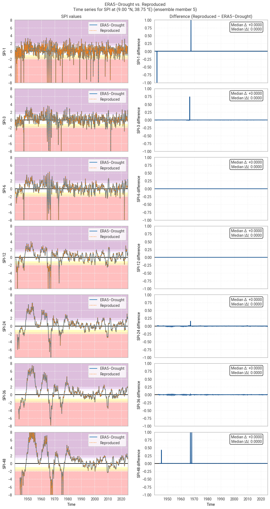
Fig. 6.1.21 SPI time series downloaded from ERA5–Drought and reproduced from ERA5 precipitation data (left) and the difference between the two (right), for the example site of Addis Ababa, Ethiopia. Colours in the left-hand column correspond to SPI categories (e.g. “extremely dry”) in [Keune+25]. This panel shows one member of the ensemble in either dataset.#
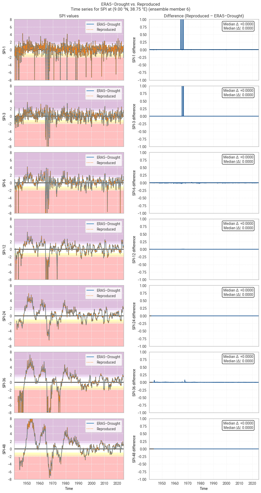
Fig. 6.1.22 SPI time series downloaded from ERA5–Drought and reproduced from ERA5 precipitation data (left) and the difference between the two (right), for the example site of Addis Ababa, Ethiopia. Colours in the left-hand column correspond to SPI categories (e.g. “extremely dry”) in [Keune+25]. This panel shows one member of the ensemble in either dataset.#
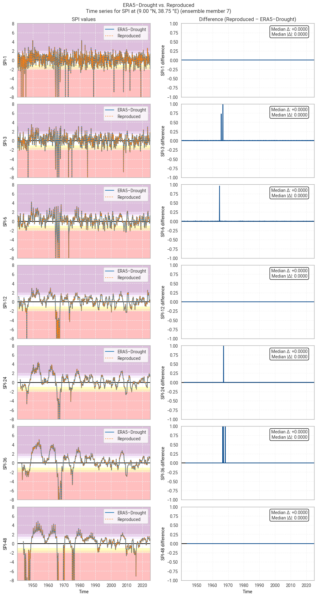
Fig. 6.1.23 SPI time series downloaded from ERA5–Drought and reproduced from ERA5 precipitation data (left) and the difference between the two (right), for the example site of Addis Ababa, Ethiopia. Colours in the left-hand column correspond to SPI categories (e.g. “extremely dry”) in [Keune+25]. This panel shows one member of the ensemble in either dataset.#
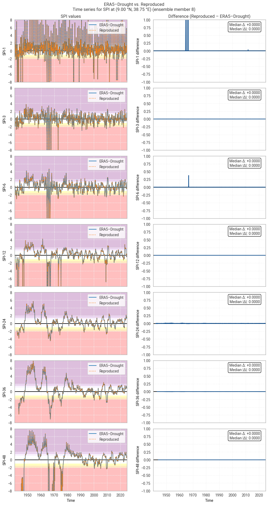
Fig. 6.1.24 SPI time series downloaded from ERA5–Drought and reproduced from ERA5 precipitation data (left) and the difference between the two (right), for the example site of Addis Ababa, Ethiopia. Colours in the left-hand column correspond to SPI categories (e.g. “extremely dry”) in [Keune+25]. This panel shows one member of the ensemble in either dataset.#
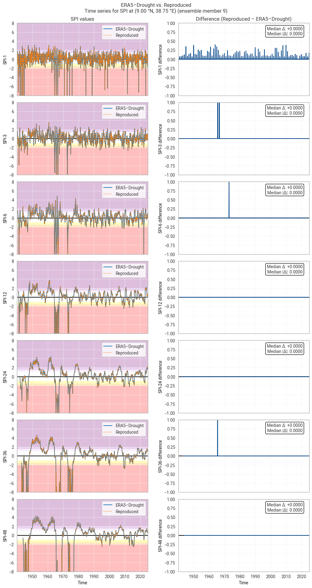
Fig. 6.1.25 SPI time series downloaded from ERA5–Drought and reproduced from ERA5 precipitation data (left) and the difference between the two (right), for the example site of Addis Ababa, Ethiopia. Colours in the left-hand column correspond to SPI categories (e.g. “extremely dry”) in [Keune+25]. This panel shows one member of the ensemble in either dataset.#
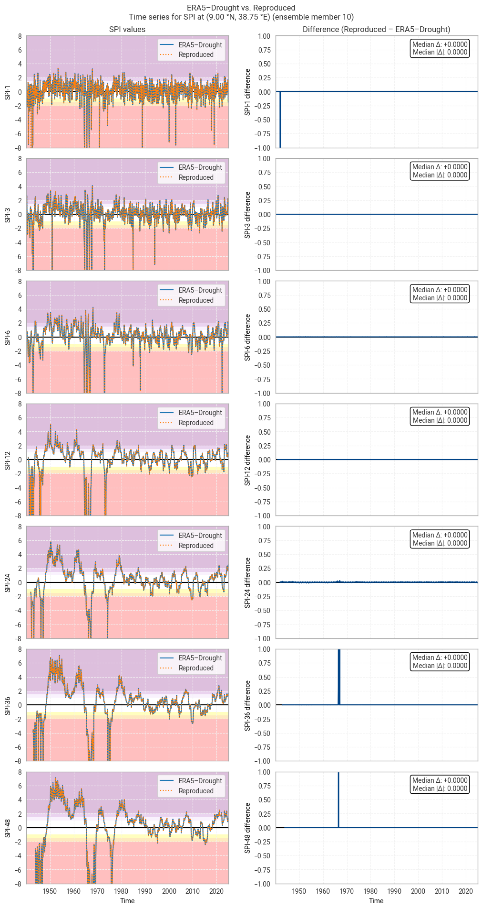
Fig. 6.1.26 SPI time series downloaded from ERA5–Drought and reproduced from ERA5 precipitation data (left) and the difference between the two (right), for the example site of Addis Ababa, Ethiopia. Colours in the left-hand column correspond to SPI categories (e.g. “extremely dry”) in [Keune+25]. This panel shows one member of the ensemble in either dataset.#
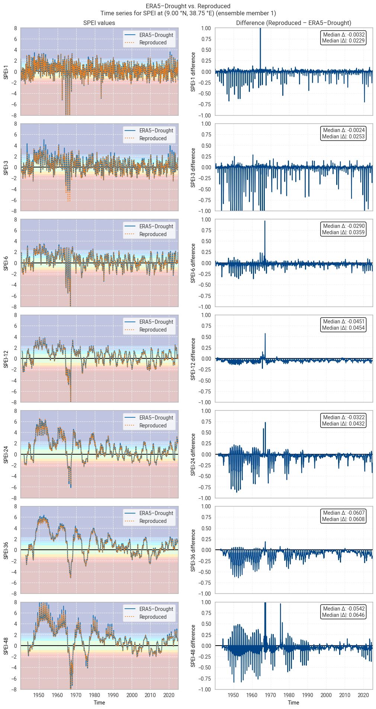
Fig. 6.1.27 SPEI time series downloaded from ERA5–Drought and reproduced from ERA5 precipitation data (left) and the difference between the two (right), for the example site of Addis Ababa, Ethiopia. Colours in the left-hand column correspond to SPEI categories (e.g. “extremely dry”) in [Keune+25]. This panel shows one member of the ensemble in either dataset.#
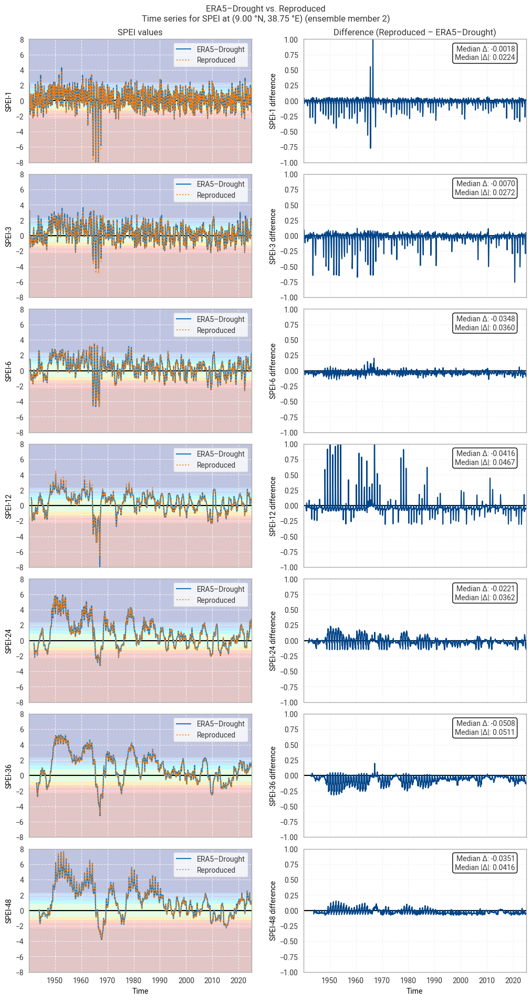
Fig. 6.1.28 SPEI time series downloaded from ERA5–Drought and reproduced from ERA5 precipitation data (left) and the difference between the two (right), for the example site of Addis Ababa, Ethiopia. Colours in the left-hand column correspond to SPEI categories (e.g. “extremely dry”) in [Keune+25]. This panel shows one member of the ensemble in either dataset.#
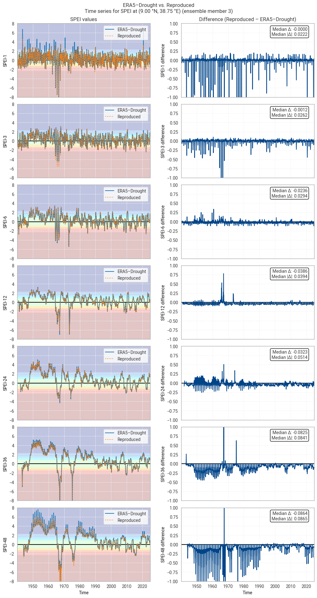
Fig. 6.1.29 SPEI time series downloaded from ERA5–Drought and reproduced from ERA5 precipitation data (left) and the difference between the two (right), for the example site of Addis Ababa, Ethiopia. Colours in the left-hand column correspond to SPEI categories (e.g. “extremely dry”) in [Keune+25]. This panel shows one member of the ensemble in either dataset.#
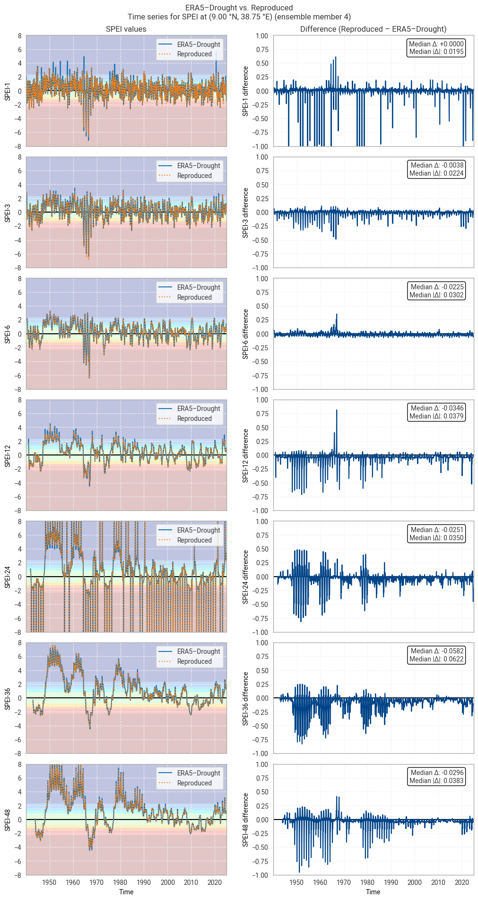
Fig. 6.1.30 SPEI time series downloaded from ERA5–Drought and reproduced from ERA5 precipitation data (left) and the difference between the two (right), for the example site of Addis Ababa, Ethiopia. Colours in the left-hand column correspond to SPEI categories (e.g. “extremely dry”) in [Keune+25]. This panel shows one member of the ensemble in either dataset.#
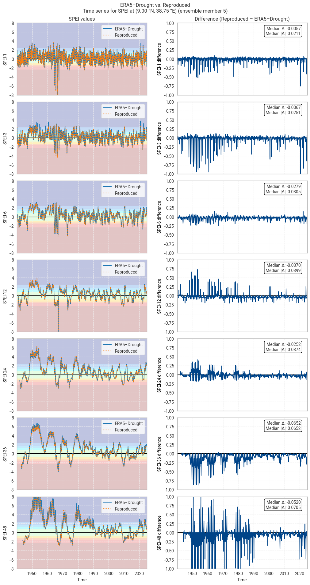
Fig. 6.1.31 SPEI time series downloaded from ERA5–Drought and reproduced from ERA5 precipitation data (left) and the difference between the two (right), for the example site of Addis Ababa, Ethiopia. Colours in the left-hand column correspond to SPEI categories (e.g. “extremely dry”) in [Keune+25]. This panel shows one member of the ensemble in either dataset.#
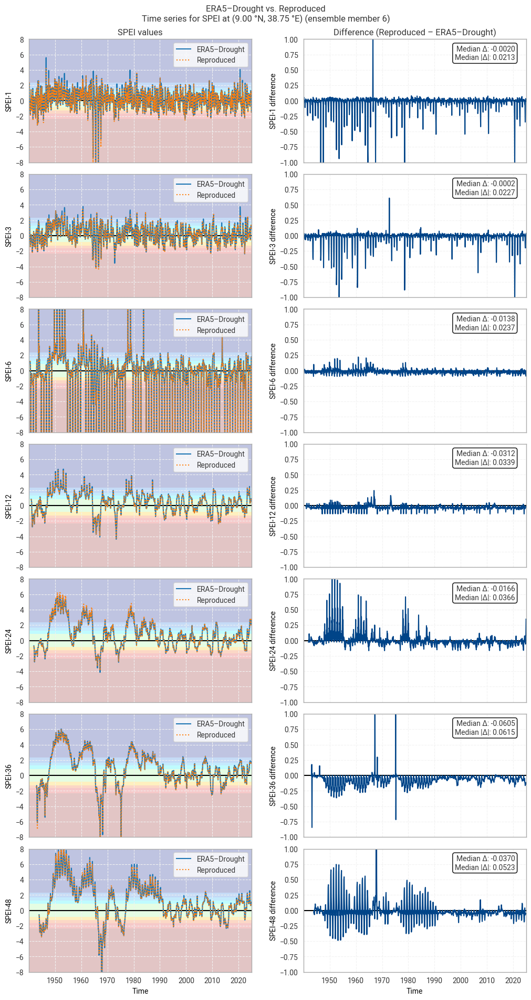
Fig. 6.1.32 SPEI time series downloaded from ERA5–Drought and reproduced from ERA5 precipitation data (left) and the difference between the two (right), for the example site of Addis Ababa, Ethiopia. Colours in the left-hand column correspond to SPEI categories (e.g. “extremely dry”) in [Keune+25]. This panel shows one member of the ensemble in either dataset.#
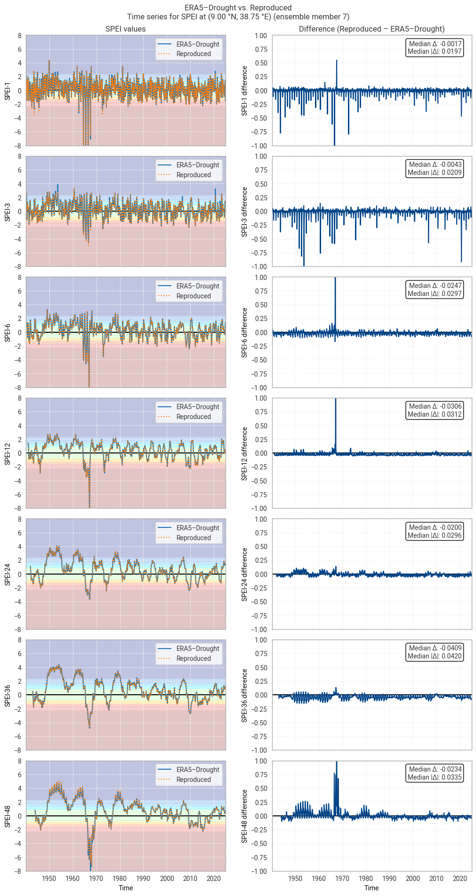
Fig. 6.1.33 SPEI time series downloaded from ERA5–Drought and reproduced from ERA5 precipitation data (left) and the difference between the two (right), for the example site of Addis Ababa, Ethiopia. Colours in the left-hand column correspond to SPEI categories (e.g. “extremely dry”) in [Keune+25]. This panel shows one member of the ensemble in either dataset.#
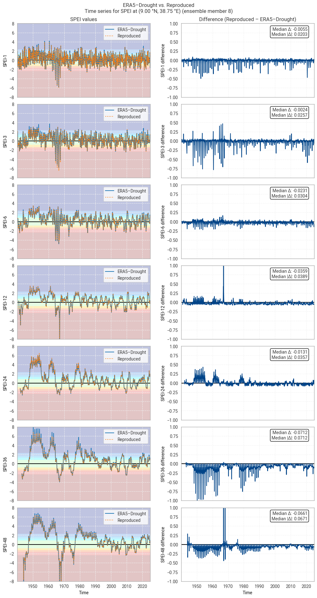
Fig. 6.1.34 SPEI time series downloaded from ERA5–Drought and reproduced from ERA5 precipitation data (left) and the difference between the two (right), for the example site of Addis Ababa, Ethiopia. Colours in the left-hand column correspond to SPEI categories (e.g. “extremely dry”) in [Keune+25]. This panel shows one member of the ensemble in either dataset.#
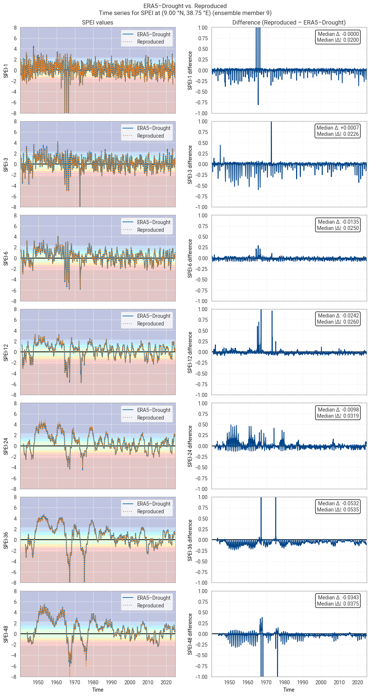
Fig. 6.1.35 SPEI time series downloaded from ERA5–Drought and reproduced from ERA5 precipitation data (left) and the difference between the two (right), for the example site of Addis Ababa, Ethiopia. Colours in the left-hand column correspond to SPEI categories (e.g. “extremely dry”) in [Keune+25]. This panel shows one member of the ensemble in either dataset.#
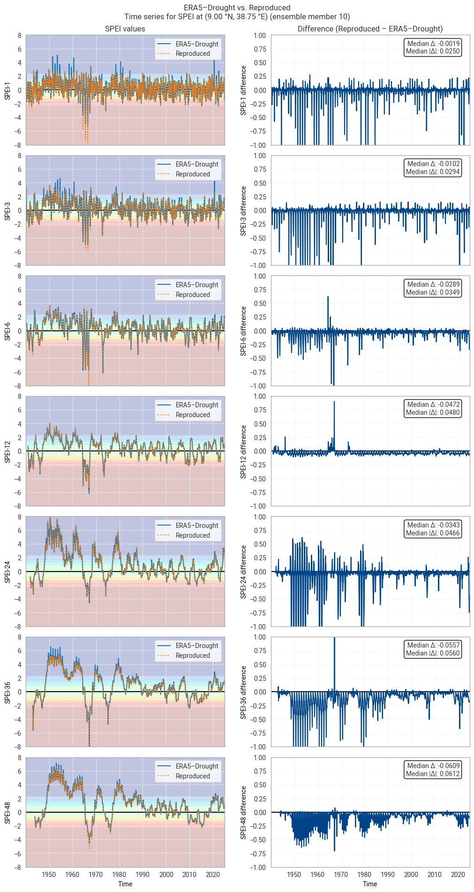
Fig. 6.1.36 SPEI time series downloaded from ERA5–Drought and reproduced from ERA5 precipitation data (left) and the difference between the two (right), for the example site of Addis Ababa, Ethiopia. Colours in the left-hand column correspond to SPEI categories (e.g. “extremely dry”) in [Keune+25]. This panel shows one member of the ensemble in either dataset.#
6. Conclusions#
In this notebook, we have assessed the reproducibility of drought indicators and associated quality flags in ERA5–Drought based on the underpinning ERA5 data. A pipeline for reproducing SPI and SPEI from ERA5 data was set up and applied to both the main reanalysis and the ensemble. Comparisons were made in one example site (Addis Ababa in Ethiopia) and the surrounding region (Horn of Africa); this notebook can easily be downloaded and adapted to a different area or time span of interest.
We can conclude that ERA5–Drought is highly reproducible. For SPI, reproduced values were generally identical to values in ERA5–Drought, with discrepancies taking the form of isolated spikes or occurring in areas that would be quality-masked anyway. The same was true for the probability of zero precipitation (p0) quality flag, which matched in ≥99% of match-ups. Larger differences were seen in the SPI normality (α) quality flag (≥74% agreement) for reasons that are not entirely clear but likely related to zero-precipitation months that are captured by the p0 quality flag. For SPEI, differences were larger, which may be explained by differences in the processing pipeline such as the exact choice of general logistic distribution used, but still small and unlikely to impact common use cases for drought classification and monitoring. The SPEI normality (α) quality flag showed good agreement (≥87%), especially considering the differences in the fitted distributions.
Users who intend to use ERA5–Drought can do so confidently. The included quality flags can be used to filter out low-quality data. Some of the effects seen in this notebook, such as slight differences in fitted parameters, are an inherent source of uncertainty in indicators like SPI and SPEI in any dataset. For a deeper exploration of the uncertainty in ERA5–Drought based on the included ensemble, we refer the reader to a forthcoming assessment on this subject.
ℹ️ If you want to know more#
Key resources#
The CDS catalogue entries for the data used were:
Complete ERA5 global atmospheric reanalysis: reanalysis-era5-complete
ERA5 hourly data on single levels from 1940 to present: reanalysis-era5-single-levels
Monthly drought indices from 1940 to present derived from ERA5 reanalysis: derived-drought-historical-monthly
Code libraries used:
More about drought indicators:
SPI: The relationship of drought frequency and duration to time scales
Candidate Distributions for Climatological Drought Indices (SPI and SPEI)
ERA5–Drought: Global drought indices based on ECMWF reanalysis
More about ERA5:
References#
[ECIU+25] Energy & Climate Intelligence Unit, ‘Estimated financial losses faced by UK farmers due dry weather impacts on key arable crops’, Energy & Climate Intelligence Unit, London, United Kingdom, Dec. 2025.
[EDO+25] EDO – European Drought Observatory, ‘EDO and GDO indicator factsheet: Standardized Precipitation Index (SPI)’, Copernicus Emergency Management Service, Mar. 2025. Accessed: Feb. 09, 2026. [Online]. Available: https://drought.emergency.copernicus.eu/data/factsheets/factsheet_spi.pdf
[Franch-Pardo+25] I. Franch-Pardo, P. A. F. Puig, and A. Cerdà, ‘Geospatial Technologies in Crisis Response: Analyzing the 2024 Floods in Valencia, Spain’, European Journal of Geography, vol. 16, no. 2, pp. 286–297, Aug. 2025, doi: 10.48088/ejg.i.fra.16.2.286.297.
[Gebrechorkos+19] S. H. Gebrechorkos, S. Hülsmann, and C. Bernhofer, ‘Long-term trends in rainfall and temperature using high-resolution climate datasets in East Africa’, Sci Rep, vol. 9, no. 1, p. 11376, Aug. 2019, doi: 10.1038/s41598-019-47933-8.
[Hersbach+20] H. Hersbach et al., ‘The ERA5 global reanalysis’, Quarterly Journal of the Royal Meteorological Society, vol. 146, no. 730, pp. 1999–2049, May 2020, doi: 10.1002/qj.3803.
[IPCC+23] IPCC, ‘Climate Change 2023: Synthesis Report. Contribution of Working Groups I, II and III to the Sixth Assessment Report of the Intergovernmental Panel on Climate Change’, Intergovernmental Panel on Climate Change (IPCC), Geneva, Switzerland, Jul. 2023. doi: 10.59327/IPCC/AR6-9789291691647.
[Keune+25] J. Keune, F. Di Giuseppe, C. Barnard, E. Damasio da Costa, and F. Wetterhall, ‘ERA5–Drought: Global drought indices based on ECMWF reanalysis’, Scientific Data, vol. 12, p. 616, Apr. 2025, doi: 10.1038/s41597-025-04896-y.
[McKee+93] T. B. McKee, N. J. Doesken, and J. Kleist, ‘The relationship of drought frequency and duration to time scales’, in Eighth Conference on Applied Climatology, Anaheim, California, USA, Jan. 1993.
[Shapiro+65] S. S. Shapiro and M. B. Wilk, ‘An analysis of variance test for normality (complete samples)’, Biometrika, vol. 52, no. 3–4, pp. 591–611, Dec. 1965, doi: 10.1093/biomet/52.3-4.591.
[Soci+24] C. Soci et al., ‘The ERA5 global reanalysis from 1940 to 2022’, Quarterly Journal of the Royal Meteorological Society, vol. 150, no. 764, pp. 4014–4048, Jul. 2024, doi: 10.1002/qj.4803.
[Stagge+15] J. H. Stagge, L. M. Tallaksen, L. Gudmundsson, A. F. Van Loon, and K. Stahl, ‘Candidate Distributions for Climatological Drought Indices (SPI and SPEI)’, International Journal of Climatology, vol. 35, no. 13, pp. 4027–4040, Feb. 2015, doi: 10.1002/joc.4267.
[UNICEF+24] UNICEF, ‘Latin America and Caribbean Region Flash Update No. 2 (Climate-related crisis in the Amazon Region)’, UNICEF, Nov. 2024.
[Vicente-Serrano+10] S. M. Vicente-Serrano, S. Beguería, and J. I. López-Moreno, ‘A Multiscalar Drought Index Sensitive to Global Warming: The Standardized Precipitation Evapotranspiration Index’, Journal of Climate, vol. 23, no. 7, pp. 1696–1718, Apr. 2010, doi: 10.1175/2009JCLI2909.1.